Dateiverwaltung komplett
Wenn der Speicherplatz im Computer nicht mehr reicht, muß man auf das Diskettenlaufwerk ausweichen. Wir zeigen, wie man Daten sinnvoll und effektiv verwalten kann.
Die einfachste Methode, Dateien innerhalb eines Basic-Programmes zu verwalten, ist, den Text (im Fall einer Datei für Texte) einfach in DATA-Zeilen beziehungsweise dimensionierten Stringfeldern abzulegen.
Zunächst wollen wir einmal von einem ganz einfachen Beispiel ausgehen: Wie auch in späteren Kapiteln dieses Kurses stellen wir uns hierzu eine Aufgabe beziehungsweise geben uns eine Datei vor, an der wir anschließend arbeiten werden.
Gehen wir einmal von folgender Datei aus:
| 01 | BANANE |
| 02 | ORANGE |
| 03 | TRAUBE |
| 04 | APFEL |
| 05 | BIRNE |
| 06 | COCA COLA |
| 07 | ERDBEERE |
| 08 | MANDARINE |
| 09 | |
| 10 | HIMBEERE |
| 11 | PFLAUME |
| 12 | BIRNE |
| 13 | BROMBEERE |
Zugegeben, dies ist keine besonders glückliche Datei (nicht etwa, weil sie 13 Elemente enthält), sondern vielmehr eine ungeordnete Liste von Früchten. Einige von Ihnen wundern sich bestimmt auch schon, was Amerikas bestverkauftes Getränk in dieser Liste zu suchen hat – dazu jedoch später.
Lassen Sie mich einmal kurz aufzählen, was für eine ideale Datei charakteristisch ist:
- Die Datei bezieht sich auf genau einen Bereich, beziehungsweise ist in einzelne Gruppen unterteilt. Das heißt, in einer Datei, mit der man zum Beispiel Videokassetten ordnen und verwalten will, haben Elemente wie Stromabrechnung oder Zeitschrifteninhaltsverzeichnisse nichts zu suchen. Genauso ist Coca Cola in unserer Beispielsdatei, mit der wir arbeiten wollen und die sich auf das Verwalten von Früchten bezieht, total fehl am Platz.
- Eine Datei kann in einzelne Gruppen unterteilt werden. Wenn man zum Beispiel eine Datei zum Verwalten eines Haushaltes eröffnen möchte, kann man sie in die Gruppen Stromabrechnung, Wasserabrechnung, Telefongebühren etc. unterteilen. Diese einzelnen Gruppen stehen dann in festgelegten Bereichen der Haushaltsdatei und dürfen sich nicht überschneiden.
- Es bietet sich an, die Dateien nach bestimmten Kriterien wie zum Beispiel alphabetisch zu sortieren.
Unsere Beispielsdatei sieht auf den ersten Blick zwar wie eine relativ vernünftige Aufzählung von Früchten aus, ist jedoch noch lange keine ideale Datei in bezug auf die obigen drei Definitionen.
Aufbau einer Datei
Hier einige Betrachtungen zum Aufbau unserer Früchtedatei:
— Die Datei besteht aus 13 SÄTZEN. Unter einem SATZ verstehen wir eine Information (zum Beispiel APFEL in unserer Früchtedatei), die an einer bestimmten Stellen der Datei zu finden ist. Entprechend unserer Beispielsdatei könnte man also sagen »SATZ Nummer 1 heißt BANANE« oder »BANANE steht in SATZ 1 der Früchtedatei« beziehungsweise »BANANE steht an erster STELLE in der Früchtedatei«.
— In der Früchtedatei sind drei Beerenarten vertreten – ERDBEERE, HIMBEERE und BROMBEERE.
— Satz 9 der Datei ist leer beziehungsweise an Stelle 9 der Früchtedatei ist eine Lücke.
— In SATZ 6 steht ein Element (COCA COLA), das nicht in diese Datei gehört (da COCA COLA ein Getränk ist und in unserer Früchtedatei nur Früchte vorkommen sollen).
— Die Datei ist weder alphabetisch noch nach einem anderen erkennbaren Kriterium sortiert beziehungsweise geordnet.
Bevor wir mit unserer Datei arbeiten können, müssen wir sie zunächst einmal in den Computer bringen.
Wir legen die »Früchte« hierzu in DATA-Zeilen ab und lesen sie dann in ein dimensioniertes Stringfeld D$ ein (Listing 1).
Mit der Anweisung GOSUB 10000 wird unsere Früchtedatei definiert und kann dann bearbeitet werden.
Erste Gehversuche
Wir wollen nun einige Experimente mit unserer Datei durchführen.
Das Unterprogramm zur Definition ist immer das gleiche. Sie müssen lediglich jeweils die anderen Programmzeilen anpassen.
SATZ lesen
Unser erstes »Experiment« ist so einfach, daß sich jegliche Erklärungen erübrigen. Bitte ergänzen Sie nun um die Zeilen aus Listing 2.
Dieses Steuerprogramm verlangt also die Eingabe von Satzzahlen und gibt daraufhin den entsprechenden Satz aus.
SATZ suchen
Hier geht es darum, einen bestimmten SATZ innerhalb der Datei zu finden. Man gibt als Suchbegriff zum Beispiel ERDBEERE ein und erhält als Antwort SATZ 7 – also der gesuchte Begriff ERDBEERE steht in SATZ 7 der Früchtedatei. Das Steuerprogramm hierfür finden Sie in Listing 3.
Auch dieses Programm ist noch sehr einfach. Nach Eingabe des gesuchten Begriffs als X$ durchläuft eine Schleife SA die gesamte Datei D$(1) bis D$(SZ) – wobei SZ der höchste SATZ der Datei ist – und überprüft bei jedem Schritt, ob X$ gleich D$(SA) ist. Wird eine Übereinstimmung gefunden, so erhält man den entsprechenden Satzwert SA.
Im Falle einer idealen Datei würde dieses Steuerprogramm optimal funktionieren. Bei unserer momentan noch etwas chaotischen Datei kann es jedoch noch zu Schwierigkeiten kommen. Betrachten wir einmal folgende Fälle:
— Suchen Sie doch einmal den Begriff »PFIRSICH«. Selbstverständlich werden Sie keine Antwort erhalten, da diese Frucht in unserer Früchtedatei nicht aufgeführt wird. Unser Steuerprogramm kann also insofern verbessert werden, daß es mit »Dieser Begriff ist in der Früchtedatei nicht enthalten!« antwortet. Diese Änderung läßt sich noch einfach vornehmen, aber es gilt auch noch ein anderes Problem zu lösen:
— Geben wir als Suchbegriff »BIRNE« ein, so erhalten wir zwei Antworten. Einmal, daß der Begriff in SATZ 5 steht und einmal in SATZ 12. Diese Antwort des Steuerprogramms ist völlig korrekt, da der Begriff beziehungsweise die Frucht BIRNE in unserer Früchtedatei zweimal auftritt – nämlich in den SÄTZEN 5 und 12.
Allerdings ist es ziemlich unsinnig, bei unserer Früchtedatei eine Frucht zweimal aufzuführen. Warum habe ich die Frucht BIRNE eigentlich zweimal aufgeführt, sollten Sie sich jetzt fragen. Ganz einfach – wenn man sehr lange Listen eintippen muß (zum Beispiel Ersatzteile-Bestandsliste für einen Kfz-Betrieb) kann es sehr leicht passieren, daß man einen Satz versehentlich mehrmals eintippt. Spätestens das Dateiverwaltungs-Programm sollte dann soviel »Intelligenz« (Anführungszeichen deshalb, da dies noch lange nichts mit KI (künstliche Intelligenz) zu tun hat) haben, um den Fehler zu erkennen und auf ihn aufmerksam zu machen. Es gibt selbstverständlich auch Dateiverwaltungen, bei denen es sinnvoll ist, Begriffe doppelt auszuführen (zum Beispiel Objekt- und Wortschatztabellen für Abenteuerspiele) – dazu jedoch später.
Wir wollen unser derzeitiges Steuerprogramm also noch so verbessern, daß es einen Hinweis gibt, wenn ein Begriff mehrmals auftaucht.
Versuchen Sie zur Übung einmal diese beiden Verbesserungen am Steuerprogramm selbst durchzuführen, bevor Sie die Lösung abtippen. Die Lösung finden Sie in Listing 4.
Dieses Steuerprogramm ist schon relativ brauchbar. Es kann Begriffe innerhalb unserer Datei suchen, erkennt, wenn ein gesuchter Begriff in der Datei überhaupt nicht vorkommt und es teilt uns mit, wenn ein Begriff in der Datei mehrmals enthalten ist (zum Beispiel BIRNE).
Bisher haben wir bei unseren Beispielprogrammen noch keinen Wert auf eine schöne Darstellung beziehungsweise Formatierung der Textausgaben auf dem Bildschirm geachtet. Im Laufe des Kurses wollen wir uns jedoch auch diesem Problem zuwenden.
Wenn man bei unserer Früchtedatei den Begriff BIRNE sucht, so erhalten wir die Antwort »Achtung, der Begriff kommt 2mal vor!«.
Auf dem Monitor sieht dieser Satz allerdings nicht sehr gut dargestellt aus, wenn man einmal das Wort »vor« am Ende des Satzes betrachtet. Das »v« des Wörtchens steht am Ende einer Bildschirmzeile, während das »or« zu Beginn der nächsten Zeile steht.
Viel deutlicher noch wird das Problem einer formatierten Textausgabe im Beispiel von Listing 5.
Dieses Programm macht nichts anderes, als einfach einen zufällig erzeugten Text auf dem Bildschirm auszugeben. Das heißt, Anfang und Ende des Textes sind immer gleich, der mittlere Teil stellt jedoch eine zufällige, aus dem Alphabet ausgewählte Buchstabenfolge dar. Durch die zufällige Auswahl des mittleren Textteils variiert die Gesamtlänge des Textes stark – es kommt so zu einer unkontrollierten, unformatierten Bildschirmausgabe. Einige Computer haben in ihrem Basic PRINT-Anweisungen mit »Intelligent Space« zur Verfügung, mit deren Hilfe es sehr einfach ist, Text formatiert auf den Bildschirm zu bringen. Eine derartige Routine ist im Basic des Commodore 64 leider nicht enthalten. Sie läßt sich jedoch mit nur geringem Aufwand als Basic-Unterprogramm programmieren, wie es Listing 6 zeigt.
Nun wollen wir dieses Unterprogramm in unser letztes Beispielsprogramm einbauen. Hierzu müssen lediglich folgende Änderungen durchgeführt werden:
60 GOSUB 20000Wenn Sie das Programm nun erneut starten, werden alle Textausgaben formatiert auf den Bildschirm gebracht. Was die formatierte Textausgabe anbelangt, so wollen wir es zunächst bei diesem Unterprogramm belassen.
Eine MERGE-Routine
Wie Sie sicherlich bereits bemerkt haben, kommen in diesem Kurs Routinen vor, auf die wir ständig zurückgreifen werden. Um sich viel Tipparbeit zu ersparen, bietet es sich daher an, die einzelnen Routinen einzeln abzuspeichern, um sie bei Bedarf wieder laden zu können. Hierbei ist es nützlich, wenn Sie mit einem MERGE-Befehl arbeiten, der es erlaubt, einzelne Programmteile nacheinander zusammen »zu laden«. Sie können hierzu Basic-Erweiterungen à la G-Basic, Simons Basic oder auch Toolkits à la KFC Super 64 verwenden. Mit fortlaufendem Kurs werden wir jedoch soviel Speicherplatz benötigen beziehungsweise das Betriebssystem des C 64 derartig »umkrempeln« und erweitern, daß es sich mit keiner dieser Basic-Erweiterungen mehr verträgt. Es bietet sich sodann die folgende MERGE-Routine, die Sie im Direkt-Modus durchführen können, an (sowohl für Disklaufwerk als auch Datasette).
Dieser Direktmodus-MERGE geht so:
A. Programm A laden. Dann notieren Sie sich den Inhalt der Speicherzellen 43 und 44 – also PEEK(43) und PEEK(44).
B. Geben Sie nun im Direktmodus ein:
POKE 43,(PEEK(45)+256*PEEK(46)-2)AND255
(RETURN)
POKE 44,(PEEK(45)+256*PEEK(46) -2/256)
(RETURN)
C. Programm B laden. Dann die notierten Werte wieder in die Speicherzellen 43 und 44 POKEn.
Fertig – beide Programme sind jetzt gemeinsam im Speicher.
Bei diesem Vorgang ist zu beachten, daß zuerst das Programm mit den niedrigeren Zeilennummern geladen wird (Programm A) – ansonsten kann es zu Schwierigkeiten kommen beziehungsweise das MERGEn klappt einfach nicht.
Wir werden deshalb schon sehr bald auf die beste Dateiverwaltungsmethode zu sprechen kommen, die auf dem C 64 überhaupt möglich ist: Relative Dateien mit Hilfe des Diskettenlaufwerks 1541.
Würde man auf Disk eine Datei mit 2000 Sätzen anlegen und in dieser dann einen Begriff suchen, der an letzter Stelle der Datei steht, so würde man bei Verwenden unserer bisherigen Suchroutine eine viel größere Suchzeit als 14 Sekunden in Kauf nehmen müssen. Auch eine Programmierung in Assembler würde keine befriedigenden Suchzeiten ergeben, da bei relativen Dateien auf Disk noch ein anderer Faktor eine wesentliche Rolle spielt: Die Zugriffzeit des Floppy-Laufwerks – also die Zeit, die das Disketten-Laufwerk braucht, um auf bestimmte Sätze einer relativen Datei zuzugreifen. Diese Zugriffszeit, die vom Floppy-Laufwerk beansprucht wird, läßt sich auch mit Assembler nicht beeinflussen. Auch Hypra-Load-Fans werden enttäuscht sein, da Hypra-Load wie auch alle anderen ähnlichen Programme (Ausnahme: Parallelübertragung à la SpeedDos etc.) die Zugriffszeit auf relative Dateien in keinster Weise beeinflussen. Hier auch gleich eine Anmerkung für alle, die ihr altes Betriebssystem durch ein Betriebssystem mit Hypra-Load ersetzt haben (beziehungsweise Umschaltplatine im Computer haben): Hypra-Load beansprucht den Datasetten-Puffer von 828-1019. Diesen Bereich werde ich ab und zu für kleine MP-Routinen beanspruchen. Es ist daher unbedingt erforderlich, daß Sie dann das alte Betriebssystem im Computer haben beziehungsweise auf dieses umschalten!
Nun aber zurück zum Sortieren.
Bevor wir unsere erste Sortierroutine programmieren, müssen wir uns noch einiges an Theorie zu Gemüte führen.
Betrachten wir hierzu noch einmal unsere Früchtedatei. Bisher haben wir immer nur einzelne Begriffe gesucht. Was aber nun, wenn wir aus unserer Früchtedatei alle Früchte heraussuchen wollen, die einer Beerensorte angehören? Wir müßten als Antwort dann ERDBEERE, HIMBEERE und BROMBEERE erhalten. Woher in aller Welt soll unser C 64 aber wissen, was Beeren sind beziehungsweise welche Früchte als Beeren bezeichnet werden können?
Die einfachste Lösung wäre die folgende:
Alle Beerenarten in unserer Datei haben die Endung BEERE gemeinsam. Es liegt nun nahe, beim Suchvorgang einfach zu überprüfen, ob die letzten 5 Zeichen jedes Früchtenamens gleich »BEERE« ist; also:
IF RIGHT$(D$,5)=X$ THENwobei X$= "BEERE" ist.
Um die Suchroutine (Listing 4) entsprechend zu ändern, müssen Sie lediglich Zeile 130 modifizieren;
130 : IF RIGHT$(D$(SA),LEN(X$))=X$THENPRINTD$(SA):IC=IC+1Die erste Hürde bei der Einführung von Dateiverwaltungsprogrammierung wäre nun geschafft. Sie wissen jetzt, wie man einfache Dateien innerhalb von Basic tabellenartig verwaltet, und Sie haben die einfachste und schlechteste Suchroutine kennengelernt, die es gibt.
Ohne Sortieren geht es nicht
Bisher haben wir unsere Früchtedatei von Anfang bis Ende durchsucht, um schließlich eine bestimmte Frucht zu finden oder zu erfahren, daß sie in der Datei gar nicht beziehungsweise mehrmals auftritt. Das ging bisher auch ziemlich schnell, in Bruchteilen von Sekunden. Was aber nun, wenn wir riesige Dateien mit mehreren tausend Sätzen verwalten wollen?
Die »Schwäche« unserer bisherigen Suchroutine wird bei dem Demo-Programm in Listing 7 besonders deutlich:
Hier wird in einer Datei mit 2000 Sätzen der Name »Mike« gesucht, der unglücklicherweise an letzter Stelle der Datei steht. Das Programm sucht 14 Sekunden, bis es den Namen endlich gefunden hat. Ein kleiner Tip am Rande: SYS 65499 bewirkt das gleiche wie der Befehl TIS="000000".
Diese Zeit ist sogar noch akzeptabel, wenn man bedenkt, daß sich auf unsere Früchtedatei keine andere vernünftige beziehungsweise schnellere Suchroutine als die obig vorgestellte anwenden läßt.
Warum? Ganz einfach – vernünftige Suchroutinen lassen sich nur bei Dateien anwenden, die nach einem bestimmten Kriterium sortiert sind (zum Beispiel nach der alphabetischen Grundordnung).
Wir müssen unsere Früchtedatei also zunächst sortieren, bevor wir eine bessere Suchroutine programmieren können.
»Warum programmieren wir die obige Suchroutine nicht einfach in Maschinensprache?« könnte jetzt einer rufen! Er hätte auch recht – die obige Routine wäre in Assembler derartig schnell, daß wir uns über die Programmierung von Suchroutinen keine Gedanken machen müßten.
Es muß also noch andere Gründe geben, warum ich das Zeitproblem nicht einfach mit einer Maschinensprache-Routine unter den Tisch kehre und stattdessen einen Umweg über die Programmierung von Sortieralgorithmen mache. Und der ist wie folgt: Sie müssen sich lediglich vor Augen halten, daß wir es im Moment nur mit einfachen Dateien innerhalb von Basic zu tun haben. Diese Dateien sind zwar sehr gut zu handhaben, aber ihre Verwaltungskapazität ist zu stark eingeschränkt – nämlich auf 38 KByte Basic-RAM beim C 64.
Wenn Sie das Programm nun starten und als Suchbegriff »BEEREN« eingeben, so gibt die Suchroutine alle Sätze aus, die mit »BEEREN« enden – also alle Beerensorten. Genausogut können Sie als Suchbegriff »COLA« eingeben und erhalten dann alle in der Datei vorkommenden Cola-Sorten aufgelistet. Diese Suchmethode funktioniert im Moment zwar ganz gut, ist jedoch viel zu sehr eingeschränkt, da sich Dateien nur in ganz seltenen Fällen nach ihren Satzendungen sortieren lassen. Angenommen, Sie möchten eine Datei programmieren, in der Computerprogramme verwaltet werden (zum Beispiel für ein Softwarehaus). Man müßte dann nach verschiedenen Kategorien einteilen: Zum Beispiel Programmart, Preislage, Computertyp etc.
Ein solches Programm für einen Software-Händler müßte folgende Bedingungen aufweisen:
- Feststellen, ob ein bestimmtes Programm geführt wird.
- Datei nach bestimmten Kriterien sortieren:
— Programmart
— Preislage etc. - Lagerbestand kontrollieren – also wieviele Exemplare eines Programmes noch vorrätig sind etc.
Man müßte die Dateiverwaltung in Form einer Tabelle aufbauen, die so aussehen könnte:
| 1. Schlüssel Programmname |
2. Schlüssel Art |
3. Schlüssel Preis |
4. Schlüssel Vorrat |
|---|---|---|---|
| vizawrite | 1 | 200.00 | 24 |
| wordpro | 1 | 1155.50 | 13 |
| space invaders | 2 | 39.00 | 67 |
| jumpman | 2 | 249.00 | 34 |
| simons basic | 3 | 99.00 | 65 |
| g-basic | 3 | 3140.00 | 45 |
| gordon saga | 4 | 39.00 | 89 |
| deadline | 4 | 99.00 | 34 |
Die einzelnen Spalten beziehungsweise Kategorien einer solchen Tabelle/Datei bezeichnet man als Schlüssel. Wenn ich die Software-Datei zum Beispiel nach dem 3. Schlüssel sortiere, so sortiere ich nach dem Kriterium Preis. Beim 1. Schlüssel – dem Programmnamen – würde ich alphabetisch sortieren.
Bevor man nun zur Programmierung übergeht, muß man sich noch einige andere Gedanken über den Aufbau der Tabelle machen. Man muß so zum Beispiel genau festlegen, aus wieviel Zeichen der Programmname maximal bestehen darf. Auch für alle anderen »Schlüssel« muß genau festgelegt werden, welche Länge sie einnehmen dürfen. Betrachten wir einmal den zweiten Schlüssel: Um zwischen 9 Programmarten unterscheiden zu können, benötige ich ein Zeichen Platz. Lege ich jedoch 2 Zeichen als maximale Länge fest, so kann ich bis zu 99 (also zweistellige Zahlen) Arten unterscheiden. Unsinnig wäre es sicherlich, 4 Stellen zu reservieren, da man wohl kaum seine Programme in 9999 verschiedene Arten einteilen will. Auch wenn ich momentan nur 9 Programmarten unterscheide (also nur 1 Zeichen Platz benötige), entscheide ich mich für 2 Zeichen Reservierung, damit meine Datei möglichst ausbaufähig bleibt.
Für den 2. Schlüssel muß ich noch eine weitere Tabelle anlegen:
1 = Textverarbeitungsprogramm
2 = Actionsspiel
3 = Basic-Erweiterung
4 = Abenteuerspiel
Nach einigen Überlegungen lege ich schließlich folgendes fest:
| Programmnamenlänge | : max. 15 Zeichen |
| 2. Schlüssel | : max. 2 Zeichen |
| 3. Schlüssel | : max. 6 Zeichen |
| 4. Schlüssel | : max. 2 Zeichen |
Die Tabelle, wie sie später im Computer sein soll, ist damit festgelegt wie in Bild 1.
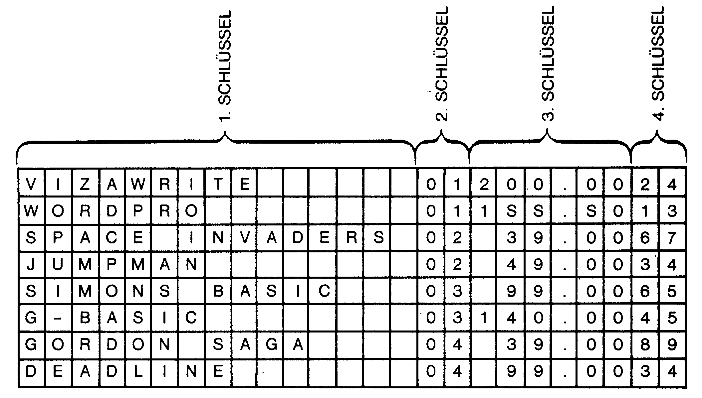
Lassen Sie mich noch einmal kurz zu unserer Früchtedatei zurückkehren. Diese Datei läßt sich besonders einfach sortieren, da sie aus nur einem Schlüssel besteht (dem Fruchtnamen).
Zum Sortieren braucht man einen möglichst guten Sortier-Algorithmus – am besten in Form eines Basic-Unterprogramms, das Sie später einfach in Ihrem eigenen Programm einbauen können.
Ich halte es nicht für sinnvoll, in diesem Kurs lange und breit auf die Funktion der einzelnen Sortieralgorithmen einzugehen beziehungsweise diese vorzustellen. Der schnellste Sortieralgorithmus ist der Quicksport. Ihn wollen wir immer dann im Kurs anwenden, wenn irgendetwas sortiert werden muß. Wer sich für die Grundlagen der Sortieralgorithmen interessiert, den möchte ich auf den Kurs »Effektives Programmieren« hinweisen, der im Jahre 1985 in der Zeitschrift 64'er veröffentlicht worden ist. Dort erfahren Sie alles Wissenswerte über die Programmierung und Funktion dieser Algorithmen.
Listing 8 zeigt das Unterprogramm zum Quicksort-Algorithmus.
Der Quicksort ist wie bereits gesagt der schnellste, aber auch der am schwierigsten verständliche Algorithmus zum Sortieren. Für den Verlauf dieses Kurses ist es lediglich notwendig, daß Sie wissen, wie das Quicksort-Unterprogramm angewendet wird beziehungsweise welche Parameter man ihm übergeben muß.
Beachten Sie bitte die beiden DIMs in Zeile 30001. Wenn Sie innerhalb eines Programmes den Quicksort mehrmals verwenden wollen, also das Unterprogramm mit GOSUB30000 aufrufen, müssen Sie diese beiden DIMs an einer anderen Stelle im Programm (am besten am Anfang) unterbringen, daß es nicht zu einem REDIM'D ARRAY ERROR kommt.
Das Unterprogramm benötigt folgende Parameter:
— das Feld, das sortiert werden soll, muß D$(1)-D$(?) sein. Sie können im Unterprogramm natürlich auch D$ durch etwas anderes ersetzen!
— In der Variablen SZ steht die Anzahl der Sätze der Datei/des Feldes.
— LG(1) und RG(1) geben Anfang und Ende des Bereiches des Feldes, das sortiert werden soll, an.
Ist LG(1)=1 und RG(1)=SZ, so heißt das, daß das gesamte Feld D$ sortiert werden soll. Ist LG(1)=10 und RG(1)=40, so wird vom 10ten bis zum 40sten Satz sortiert etc.
Das Beispielprogramm in Listing 9 zeigt, wie sich unsere Früchtedatei mit Hilfe des Quicksort-Unterprogramms alphabetisch sortieren läßt.
An diesem Programm braucht nicht viel erklärt werden – einfach Abtippen und RUN.
Interessant ist vielleicht, was mit unserem Satz Nummer 9 der Früchtedatei passiert ist (der leere Satz). Er steht nach dem Sortiervorgang an erster Stelle der Datei. Wenn Sie möchten, dann können Sie leere Sätze als eine Art NOPs betrachten – einfache Platzhalter, in die man später noch etwas einbauen kann. Bei Assembler-Programmierung sind solche Platzhalter unentbehrlich, bei Dateiverwaltung jedoch relativ überflüssig, da gute Dateiverwaltungen Befehle enthalten, innerhalb einer Datei automatisch zwischen zwei Sätzen einen Leerraum zu schaffen. Vor dem Sortieren bietet es sich folglich an, die leeren Sätze aus der Datei zu eliminieren.
Man durchläuft die gesamte Datei hierbei mit einer Schleife und schreibt immer dann, wenn man auf einen leeren Satz findet, den letzten Satz dieser Datei in den leeren Satz. Danach wird SZ, die Variable, die angibt, wieviele Sätze die Datei enthält, um den Wert 1 erniedrigt.
Das geht so wie in Listing 10.
Sie müssen zum Aufruf des Unterprogramms lediglich Listing 9 um folgende Zeile ergänzen:
11 GOSUB20000:REM LEERE SAETZE WEGNun werden vor dem Sortiervorgang alle leeren Sätze aus der Datei entfernt. Wir sind nun in der Lage, jede (sich komplett im Computer befindliche) Datei zu sortieren. Daher eröffnen sich uns auch völlig neue Suchroutinen:
Die binäre und die index-sequentielle Suchmethode.
Für unsere folgenden Experimente gibt die Früchtedatei nicht mehr genug her. Wir wenden uns deshalb nun der Software-Datei zu, die über mehrere Schlüssel verfügt.
Zunächst wird die Datei wieder in einem Unterprogramm ab 10000 definiert, wie es Listing 11 zeigt.
Eigentlich haben wir unsere Dateien bisher immer doppelt im Speicher stehen: einmal innerhalb von DATA-Zeilen und zum anderen in einem dimensionierten Stringfeld. Wir gehen bisher also ziemlich verschwenderisch mit dem geringen Speicher unseres C 64 um (gering in Anbetracht der Tatsache, daß es heute schon Computer zu Homecomputer-Preisen gibt, die auf 512 KByte RAM aufgestockt werden können!). Es wird also höchste Zeit, sich um eine bessere Unterbringung unserer Tabellen zu bemühen.
In der Tat – sind die DATA-Zeilen erst einmal in ein Stringfeld eingelesen, werden sie nicht mehr weiter benötigt und blockieren lediglich freien Speicherplatz.
Oh, soeben habe ich einen kleinen Fehler in Listing 11 entdeckt: Die REM-Zeile 10000 darf nicht länger Früchte-Datei heißen, sondern muß jetzt Software-Datei lauten. Wir müssen Zeile 10000 deshalb folgendermaßen abändern:
10000 REM SOFTWARE-DATEI DEFINIERENVielleicht werden sich einige (mit gutem Recht) wundern, warum ich hier lange und breit auf diesen lächerlichen »Fehler« eingehe und nicht einfach mein Manuskript verbessere........ kein Kommentar, denn jetzt kommt wieder ein kleiner (aber äußerst interessanter) Tip am Rande:
Ärger beim »Replace«'n
Selbstverständlich gehe ich jetzt davon aus, daß Sie alle Listings, die Sie im Rahmen dieses Kurses abtippen, auf Diskette speichern, um diese später wieder verwenden zu können. Nehmen wir einmal an, daß Sie auch das falsche Listing 11 bereits gespeichert haben. Worauf ich hinaus will, ist das folgende: Wenn Sie das »falsche« Listing bereits gespeichert haben, so werden Sie es sicherlich verbessern und anschließend mit dem Befehl
SAVE"@:LISTING 11",8wieder speichern. Wenn Ihnen nicht klar ist, was das »@« im Filename soll, so sind Sie noch nicht »reif« genug für den folgenden Tip – lesen Sie schleunigst Ihr Bedienerhandbuch zur VC 1541!
Wer die Anweisung kennt und schon des öfteren angewandt hat, hat sicherlich auch schon unerklärbare Probleme damit gehabt. So kann es zum Beispiel vorkommen, daß der Befehl einfach nicht funktioniert und die rote LED am Laufwerk ähnlich einer extrem miserablen 1-Kanal-Lichtorgel im 4/4-Takt zu blinken beginnt. Die Erklärung dieses Fehlers im Betriebssystem ist sehr kompliziert. Für den Anwender ist nur eines wichtig: Niemals den @ verwenden! Sicherer ist es, mit »Scratch« zu löschen und dann noch einmal zu speichern. Also: Niemals SAVE " @..."
Nun aber schnell zurück zu unserem aktuellen Problem. Laden Sie bitte Listing 11, falls Sie es nicht mehr im Speicher haben. Nach Eingabe von CLR und PRINT FRE(0)+65000 erhalten Sie die Antwort, daß 37928 Byte Basic RAM frei sind. Nach Starten des Programmes mit GOSUB 10000 im Direktmodus und Eingabe von PRINT FRE(0) erhalten Sie die Antwort, daß jetzt nur noch 37880 Bytes Basic RAM frei sind. Es wird also Basic-RAM benötigt, um ein Stringfeld zu füllen. Es macht bei unserem Programm zwar nur ein paar Bytes aus, aber unsere Tabelle ist ja extrem klein. Bei großen Dateien kann ein sehr großer Unterschied vorkommen.
Es bieten sich nun mehr Lösungsmöglichkeiten an.
Man kann so zum Beispiel darauf verzichten, die DATAs in ein Stringfeld einzulesen. Man benötigt dann eine modifizierte RESTORE-Routine. Im Basic des C 64 wird mittels RESTORE der DATA-Zeiger einfach auf die erste DATA-Zeile zurückgesetzt. Unter modifizierte RESTORE-Funktion versteht man nun die Möglichkeit, den DATA-Zeiger auf eine bestimmte DATA-Zeile zu setzen – RESTORE(X), wobei X für die DATA-Zeile steht, auf die der Zeiger gesetzt werden soll. Von dieser Möglichkeit, die sich hervorragend zum Programmieren von Adventures anbietet, die komplett im Basic-RAM stehen (worauf Datasetten-Benutzer angewiesen sind), habe ich in meinem ersten Adventure-Programmierkurs im zweiten 64'er Sonderheft regen Gebrauch gemacht. Das entsprechende Maschinenprogramm für die modifizierte RESTORE-Routine finden Sie in diesem Heft.
Für Dateiverwaltung, KI-Programme und disketten-orientierte Adventures ist die RESTORE-Methode jedoch absolut ungeeignet. Die Tabelle kann innerhalb von Basic nicht ausgebaut werden – und gerade dies ist bei Dateiverwaltung und selbstlernenden KI-Programmen unvermeidlich (schon gut, es gibt Basic-Zeilengeneratoren, aber wir wollen uns mit effektvolleren Methoden vertraut machen!).
Eine wesentlich effektvollere Methode besteht darin, die DATA-Zeilen durch sequentielle Dateien zu ersetzen.
Wir ergänzen deshalb Listing 11 nun um ein Steuerprogramm, das D$(1) bis D$(SZ) als sequentielle Datei auf Disk ablegt (Listing 12).
Die Software-Datei ist jetzt unter dem Filenamen »Daten-File« als SEQ-File auf Diskette gespeichert. Unter einem sequentiellen File versteht man eine Datenkette, die auf Diskette gespeichert ist – also ein String beziehungsweise Element nach dem anderen. Eine so gespeicherte Tabelle kann ganz einfach wieder in den Computer in ein dimensioniertes Feld geladen werden (Listing 13).
Die hier vorgestellten Beispielprogramme sollen uns zunächst genügen. Es gibt noch einige weitere, wesentlich bessere Methoden, Dateien und Tabellen als sequentielle Files zu speichern. Tatsächlich ist es auch nicht besonders sinnvoll, jeden einzelnen Satz einer Tabelle mit mehreren Schlüsseln als einfachen String zu speichern. Wie ich Ihnen bereits in der Einleitung zum Kurs mitteilte, möchte ich das Thema Dateiverwaltung speziell auf die Bereiche KI und fortgeschrittene Adventure-Programmierung beziehen. SEQ-Files sind auch mit der Datasette möglich. Beim Programmieren von Adventures und KI sind sie jedoch nur äußerst begrenzt sinnvoll einsetzbar. Wie es der Name schon sagt, werden sequentielle Dateien kettenförmig gespeichert. Es ist somit nicht möglich, einen bestimmten Teil der Datei so mir nichts, dir nichts zu verändern beziehungsweise in der Mitte der Datei eine Lücke zu schaffen, um nachträglich etwas einzutragen. Zur Bearbeitung muß eine SEQ-Datei immer komplett in den Computer geladen werden. Dann, nach Beendigung der Arbeit, wird sie wieder auf Diskette gespeichert. Eine sequentielle Datei läßt sich nur dann effektiv modifizieren, wenn sie so klein (relativ betrachtet) ist, daß sie auf einmal in den Speicher des C 64 paßt. Dadurch ist die maximale Kapazität einer solchen Datei sehr eingeschränkt.
Für kleinere Dateien sind sequentielle Dateien jedoch empfehlenswert, da sie sehr einfach zu handhaben sind. Für die späteren KI-Programme und Adventures werden SEQ-Files nur eine kleine Nebenrolle spielen. Ich möchte daher nicht auf alle Möglichkeiten der sequentiellen Datenspeicherung eingehen, zumal zu diesem Thema auch genügend geschrieben worden ist.
Jetzt wird es aber höchste Zeit, einige weitere Experimente zum Sortieren und Suchen an unserer neuen Datei durchzuführen. Als Ausgangsprogramm verwenden Sie bitte immer Listing 11. Für unsere Beispiele lohnt es sich nicht, die Datei jedesmal als SEQ-file laden zu müssen.
Sortieren mit dem Quicksort
Wie wir anhand des Demoprogramms zur Suchzeit (Listing 7) festgestellt haben, ist unsere erste Suchmethode – Datei vom ersten bis zum Zielelement durchsuchen – viel zu langsam, wenn eine große Datei vorliegt, und das gesuchte Element ziemlich am Ende der Datei steht. Wir waren uns auch einig, daß bessere Suchmethoden nur dann sinnvoll sind, wenn die Datei alphabetisch beziehungsweise nach einem anderen Kriterium sortiert ist. Besonders deutlich kommen die verschiedenen Sortierkriterien anhand einer Personendatei zum Vorschein. Wenn ich zum Beispiel wissen will, ob eine bestimmte Person in der Datei aufgeführt ist, so muß ich die Datei alphabetisch ordnen (Namen), um ein schnelles Suchprogramm schreiben zu können. Will ich jedoch wissen, wer an einem bestimmten Tag alles Geburtstag hat, so muß ich die Datei nach den Geburtstagen sortieren. Das Sortieren von Geburtstagen ist schon etwas komplizierter als das Sortieren nach dem Alphabet.
Beispiel:
Tobi 21.11.66
Borgsi 30.05.67
Olaf 20.03.67Als String lassen sich die Geburtstage nicht so ohne weiteres sortieren. Ein kleiner Trick hilft jedoch:
Tobi 661121
Borgsi 670530
Olaf 670320Die Geburtstage werden durch einfaches »Umdrehen« in sechsstellige Zahlen verwandelt. Die höchste Zahl kommt jetzt dem jüngsten der drei zu, die niedrigste dem ältesten.
Jetzt können die »Geburtstage« einfach als Strings mit dem Quicksort oder einem anderen Sortieralgorithmus sortiert werden.
Zurück zur Software-Datei. Wie wir bereits festgestellt haben, sind verbesserte Suchmethoden nur dann möglich, wenn die Datei irgendwie (nach irgendeinem Schlüssel) sortiert ist. Bei unserer Software-Datei bietet sich der 1. Schlüssel – also der Programmname – an. Listing 14 zeigt, wie die Datei mit dem Quicksort alphabetisch geordnet wird (1. Schlüssel).
Bitte beachten Sie unbedingt die Änderungen des Quicksort-Unterprogramms in den Zeilen 30030, 30050 und 30060. Diese Zeilen müssen immer dann modifiziert werden, wenn nicht ein ganzer String, sondern nur ein Teilbereich des Strings als Sortierargument gelten soll. Beim 1. Schlüssel unserer Software-Datei sind dies die jeweils ersten 15 Zeichen vom Gesamtstring.
Wir stellen uns nun folgende Aufgabe: Nach Eingabe des Programmnamens gibt das Programm Art, Preis und Lagerbestand zu dem Programm aus.
Eine einfache Lösung wäre es wieder, die ganze Datei nach dem Programmnamen zu durchsuchen. Da unsere Programmnamen jedoch alphabetisch geordnet sind, können wir mit einer anderen Suchmethode arbeiten, mit der binären Suchmethode.
Die binäre Suchmethode
Betrachten wir einmal den geordneten Schlüssel der Software-Datei:
1 DEADLINE
2 G-BASIC
3 GORDON SAGA
4 JUMPMAN
5 SIMONS BASIC
6 SPACE INVADERS
7 VIZAWRITE
8 WORDPROWir wollen nun das Programm GORDON SAGA suchen, um festzustellen, in welchem Satz (Satznummer) es steht.
Wir setzen zunächst einen Zeiger auf den mittleren Satz der Datei. Die Satzanzahl SZ beträgt 8. Der mittlere Satz SA errechnet sich als SA=INT(SZ/2). Im ersten Durchgang wird der Zeiger also auf 4 gesetzt.
Nun untersuchen wir, ob unser Suchbegriff GORDON SAGA gleich Satz 4, kleiner als Satz 4 oder größer als Satz 4 ist. Wir kommen zu dem Ergebnis, daß der Suchsatz kleiner als Satz 4 ist. Der Suchsatz muß also in der ersten Hälfte der Datei stehen (im Bereich Satz 1 - Satz 3).
Wir halbieren den Restbereich und haben als neue Mitte Satz 2. GORDON SAGA ist jedoch größer als Satz 2. Unser Suchsatz kann also nur noch im Bereich von Satz 3 - Satz 3 stehen – also in Satz 3. Damit haben wir ihn gefunden.
Die binäre Suche besteht also darin, Bereiche nach oben beziehungsweise nach unten hin zu halbieren, bis der Suchsatz gefunden ist. Das Schema in Bild 2 macht die binäre Suchmethode noch viel deutlicher. SU$ ist der Begriff (String), der gesucht werden soll. D$(SA) ist der Inhalt (String) des Satzes mit der Nummer SA beziehungsweise des SAten Satzes der Datei.
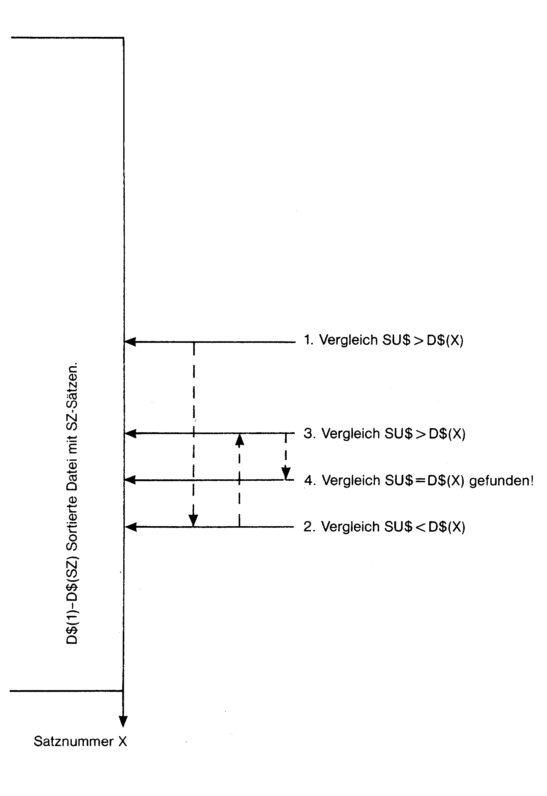
Man setzt also jeweils einen Zeiger in die Mitte des Bereiches, in dem sich der gesuchte Begriff befinden muß. Am Anfang des Suchvorgangs ist dies logischerweise die Mitte der gesamten Datei. Danach wird untersucht, ob er Begriff gefunden wurde beziehungsweise ob der sich im Bereich unterhalb oder überhalb des Zeigers befindet. Stellt man wie in unserem Bild beim 1. Vergleich fest, daß sich der gesuchte Begriff unterhalb des Zeigers befindet, so wird der neue Zeiger auf die Mitte des unteren Bereiches etc. gesetzt. Was jedoch, wenn ein Suchbegriff überhaupt nicht in einer Datei vorkommt?
Ganz einfach, man kann bei einer Datei mit bekannter Satzanzahl SZ genau berechnen, wieviele Vergleiche maximal gemacht werden müssen, um einen Begriff zu finden, der in der Datei enthalten ist. Die binäre Suchmethode beruht schließlich auf dem Halbieren von Bereichen. Gehen wir wieder einmal von der Software-Datei aus. Sie enthält genau 8 Elemente. Nach dem ersten Suchversuch wird die Datei halbiert. Es kommen dann nur noch 4 Elemente zur Auswahl, in deren Mitte der zweite Zeiger positioniert ist. Nach dem zweiten Versuch kommen nur noch 2 Elemente in Frage und spätestens nach dem 4. Versuch schließlich nur noch eine.
Spätestens beim 4. Versuch (Halbierung) muß ein Suchbegriff somit in der Software-Datei gefunden werden – andernfalls kommt er nicht vor.
Die Formel, mit der sich die maximal nötige Suchvorgangs-Anzahl berechnen läßt, lautet so:
N=INT(LOG(SZ)/LOG(2))+1
Nach N-Versuchen muß ein Begriff also gefunden sein, wenn er in einer Datei mit SZ-Sätzen enthalten ist.
Am besten läßt sich die binäre Suchroutine anhand eines entsprechenden Unterprogrammes (Listing 15) erklären.
Das Unterprogramm setzt folgendes voraus:
Das Feld, in dem gesucht werden soll, steht in D$(0)-D$(SZ), wobei SZ die Nummer des höchsten Satzes beziehungsweise die Anzahl der Sätze darstellt.
Dokumentation:
1010 Eingabe des Suchbegriffs SU$.
1020 Berechnung der maximal nötigen Suchvorgänge: N
1030 SA, der Zeiger auf die Datei wird zu Beginn des Suchvorgangs in die Mitte der Datei gesetzt. Warum berechnet sich die Mitte nicht einfach mit SA=SZ/2? Ganz einfach: Zum Halbieren »der Restbereiche« verwenden wir Potenzen von 2 (wird gleich erläutert). Probleme würde es geben, wenn eine Datei aus einer ungeraden Anzahl von Sätzen bestünde. Man könnte dann schlecht halbieren. Eine »ungerade Datei« einfach mit einem »Pseudozusatzsatz« zu versehen, würde auch nichts bringen – früher oder später kämen beim Halbieren ungerade SA-Positionen zustande – und die darf's nicht geben. Die Formel SA=(2xaN)/2 gewährleistet jedoch, daß Nmal halbiert werden kann, wobei die Restbereiche stets aus einer geraden Anzahl von Elementen bestehen.
1040 Nach jedem Suchvorgang (Halbierung) wird die Variable N um 1 erniedrigt. Ist sie kleiner als 0, so kommt der Suchbegriff in der Datei nicht vor.
1050 – 1100 Halbierungsvorgang
1060 Prüfen, ob D$(SA) gleich SU$ ist. Wenn ja, so ist der Begriff gefunden worden und die Suche wird abgebrochen.
1070 Wenn SU$ kleiner als D$(SA) ist, so heißt dies, daß sich SU$ (falls es vorkommt) nur in dem Bereich über dem Zeiger SA befinden kann. Der Zeiger muß also auf die Mitte dieses Bereiches gesetzt werden. Das Versetzen geschieht mit der Potenzfunktion: SA=SA-(2*a(N-1)).
Dadurch, daß N nach jedem Suchbegriff um 1 verkleinert wird, werden die Restbereiche und somit die Verschiebungsdistanz des Zeigers auch immer kleiner.
1080–1090 Diese Zeilen treten dann in Kraft, wenn SU$ größer als D$(SA) ist. Die Verschiebungsformel lautet dann: SA=SA+(2*(N-1)), da der Zeiger jetzt in den unteren Bereich verschoben werden muß. Um einen Überlauf zu verhindern, ist Zeile 1090 nötig. In Zeile 1030 idealisierten wir unsere Datei so, daß nie ungerade Zeigerwerte auftreten können. Die Datei wird also größer angenommen, als sie eigentlich ist. Das Vergrößern der Datei ist die einzige Möglichkeit zum Idealisieren. Würde man sie verkleinern, so gingen Sätze verloren beziehungsweise würden beim Suchen außer acht gelassen werden. Die Zeile 1080 ruft solange rekursiv auf, bis der Zeiger SA sich wieder im erlaubten Bereich von 0 bis SZ befindet – falls er diesen Bereich verlassen hat. Es ist erlaubt, den Zeiger außerhalb des erlaubten Bereiches zu positionieren; es ist jedoch klar, daß ein Suchbegriff außerhalb der Datei gefunden werden kann. Auch kann es nur im Fall SU$>D$(SA) zu einer Positionierung außerhalb des Datenbereiches kommen.
1110 Nächsten Suchvorgang vorbereiten
1120 Ist N kleiner als 0, so befindet sich SU$ nicht in der Datei.
1130 kann jederzeit entfernt werden.
Dies hört sich alles schön und gut an, ich weiß jedoch, daß sich viele schwer tun, wenn sie das erste Mal mit binären Suchsystemen konfrontiert werden. Ich rate Ihnen deshalb, falls Sie Schwierigkeiten haben, sich das obige Programm einmal Schritt für Schritt durchzudenken. Nehmen Sie gegebenenfalls ein Blatt Papier und eine kleine Datei her und schreiben Sie den gesamten Programmablauf (wo sich der Zeiger nach jedem Suchvorgang befindet) in Form von einfachen Schemen auf. Hat man es erstmal verstanden, dann ist es ganz einfach.
Bitte ergänzen Sie jetzt Listing 14 mit Listing 15. Außerdem sind folgende Änderungen vorzunehmen:
Zeile 70 löschen.
Ergänzen beziehungsweise ändern Sie auch die Zeilen, wie in Listing 14b angegeben.
Die binäre Suchmethode ist sehr schnell. Um eine Datei von 1000 Sätzen nach einem Begriff zu durchsuchen, sind maximal 10 Halbierungen notwendig, um festzustellen, in welchem Satz der Begriff steht, beziehungsweise daß er nicht vorkommt.
Erhöhen kann man die Suchgeschwindigkeit noch durch Einsatz von index-sequentiellen Dateien, wie wir sie bei Parser 4.0 kennenlernen werden.
Das Programm, das Sie jetzt im Computer haben, simuliert eine einfache Dateiverwaltung für Software.
Damit haben Sie den ersten Einstieg in die Dateiverwaltung auch schon geschafft. Wir können uns nun Dateien auf Disk zuwenden, die für die Programmierung von Adventures und KI ein großes Hilfsmittel darstellen.
Deutscher Zeichensatz im Commodore 64
Bevor ich mich der Programmierung von relativen Dateien widme, möchte ich schnell noch dieses Kapitel einfügen. Wer professionelle deutsche Text-Adventure schreiben will (und das können Sie am Ende dieses Kurses!), sollte keineswegs auf einen deutschen Zeichensatz verzichten.
Auch bei allen anderen Programmen mit deutschen Texten macht ein deutscher Zeichensatz einen besseren Eindruck. Natürlich gehen bei einer Zeichensatzänderung immer ein paar KByte-RAM flöten (der Zeichensatz muß schließlich vom ROM ins RAM kopiert werden), aufgrund guter Programmiertechniken, die sehr platzsparend sind, können wir diesen Verlust jedoch getrost verschmerzen.
Auch bei relativen Dateien bringt ein neuer Zeichensatz erhebliche Vorteile, wie wir schon bald sehen werden.
Zunächst müssen wir festlegen, wo im RAM der neue Zeichensatz liegen soll.
Bild 3 zeigt den Speicherbelegungsplan des C 64, wie er Ihnen wahrscheinlich bereits von anderen Kursen aus dem 64'er-Magazin her bekannt ist. Uns interessieren nur der linierte Bereich und das Basic-RAM. Im Laufe des Kurses werden wir den gesamten linierten RAM-Bereich hernehmen (für Maschinenprogramme, Dateien etc.). Den Basic-RAM versuche ich weitgehend für Ihre eigenen Ideen und Routinen zur freien Verfügung zu halten. Sie sollten sich nicht wundern, warum bestimmte Routinen (zum Beispiel Zeichensatz) in bestimmte Speicherbereiche geschrieben werden, denn alle Routinen sollen sich am Ende des Kurses bei vollausgelastetem RAM miteinander vertragen. Grübeln Sie also nicht lange nach, wenn ich eine Routine in einen zunächst ungeeignet anmutenden RAM-Bereich schreibe.
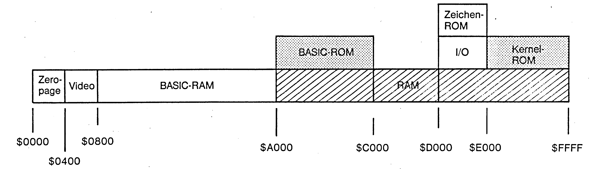
Unseren deutschen Zeichensatz bringen wir im Bereich 57344 - 61440 unter. Da der VIC jedoch nur ganze RAM-Blöcke von 16 KByte verwalten kann, müssen wir auch den Videobereich (Bildschirm) verschieben. Ihn legen wir nach 52223 - 53248. Bitte beachten Sie, daß hierbei auch die Sprite-Pointer (2040 - 2047) nach 53239 - 53246 verschoben werden (Bild 4)!
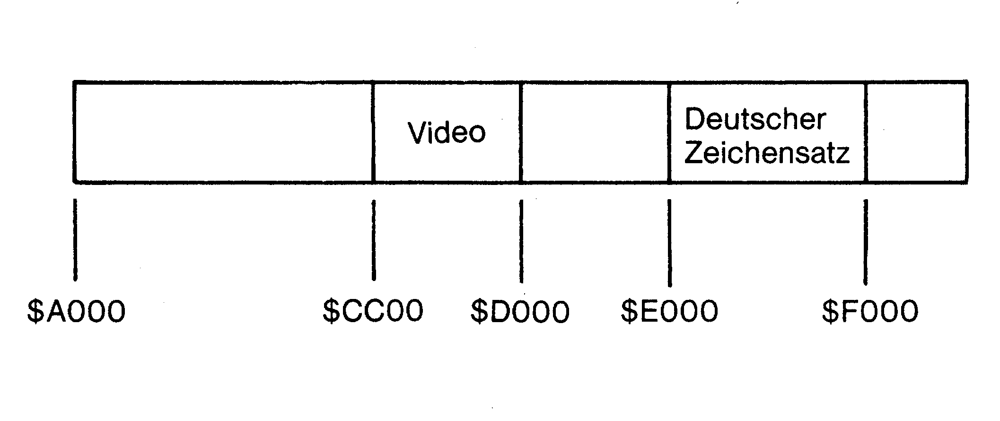
Bei dem Listing 16 handelt es sich um einen menüfreundlichen Zeichensatzeditor, der speziell für den Kurs abgerichtet ist (also für RAM-Bereich 57344-61440).
Dokumentation zum Listing 16
Der Zeichensatzeditor ist lediglich ein Utility zum Kurs. Ich beschränke mich daher auf das Wesentliche.
Interessant ist im Prinzip nur das Abändern des Listings zum Erstellen für Zeichensätze in andere RAM-Bereiche als die Vorgeschlagenen. Ich bin mir jedoch ziemlich sicher, daß der Zeichensatz im Bereich von 57344 - 61440 sehr gut untergebracht ist, wie ich Ihnen schon bald zeigen werde.
Um den Editor für andere Bereiche umzuschrauben, müssen lediglich folgende Zeilen abgewandelt werden:
55 IZ = Startadresse im RAM (ist momentan 57344)
122 siehe Listing
124 siehe Listing
201 VIDEO = 52223
1030 und 1040 siehe Listing
2010 siehe Listing
Es müssen also nur Anfangs- und Endadressen vom ZS-Bereich und gegebenenfalls vom Video modifiziert werden.
Bedienungsanleitung
Nach dem Programmstart meldet sich das Hauptmenü mit drei Auswahlmöglichkeiten:
NEUEN Z.SATZ ERSTELLEN: Durch diese Wahl wird der Zeichensatz vom ROM in den RAM-Bereich ab 57344 kopiert.
ALTEN Z.SATZ ÄNDERN: Ein bereits bestehender Zeichensatz kann geladen werden, um weiter verändert zu werden.
DEUTSCHEN Z.SATZ GENERIEREN: Der Editor erstellt hier automatisch einen deutschen Zeichensatz, den Sie anschließend speichern können. Bild 5 zeigt Ihnen, welche Zeichen wie geändert wurden. Ich bin mir sicher, daß Sie sich schnell an die neue Tastaturbelegung gewöhnen werden. Daß auch Zeichen wie ", und : neu definiert wurden, hat seinen Grund: den erfahren Sie im nächsten Kapitel!
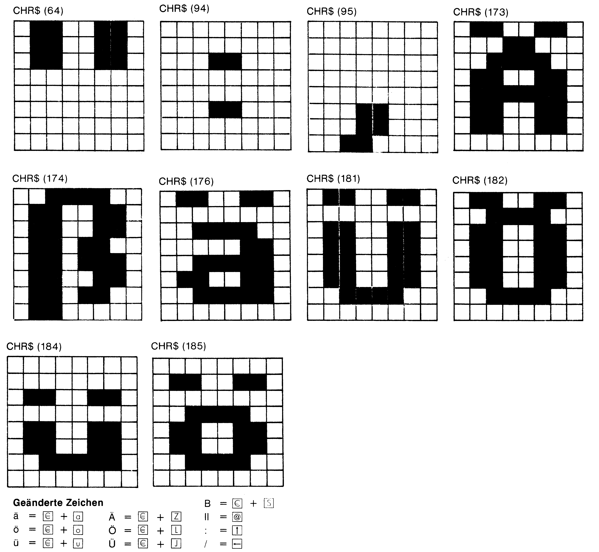
Nach der Wahl von einem der drei Hauptmenüpunkten gelangen Sie ins nächste Menü. Sie haben nun folgende Möglichkeiten:
| 1: GROSS-GRAFIK Z.SATZ: | Dies müssen Sie wählen, wenn Sie ein Zeichen des GROSS/GRAFIK-Zeichensatzes ändern wollen. |
| 2: GROSS-KLEIN Z.SATZ: | Wie oben, jedoch GROSS/KLEIN-Zeichensatz. |
Nach Wahl von Punkt 1 oder 2 müssen Sie den Bildschirmcode des Zeichens angeben, das Sie ändern wollen (Tabelle siehe C 64-Handbuch). Nun kann das Zeichen mittels Joystick oder Cursor-Tasten + SPACE editiert werden. Sind Sie mit der Änderung fertig, so muß die RETURN-Taste gedrückt werden. Sie werden dann gefragt, ob auch das entsprechende Revers-Zeichen geändert werden soll. Dann gelangen Sie wieder zurück ins Menü.
| 3: Z.SATZ Speichern: | Der neue Zeichensatz wird auf Disk gespeichert. |
| 4: Crazy Characters: | Eine Spezialfunktion des Editors (benötigt viel Rechenzeit!). Speichern Sie den mit Crazy-Characters erzeugten Zeichensatz einmal unter dem Filenamen »CRAZY« ab. Wenn Sie nun das Listing17 und 18 eingeben und starten, werden Sie schnell verstehen, warum ein Spiegel zum unentbehrlichen Programmierhilfsmittel werden kann! |
Bitte erzeugen Sie nun mittels dem Menüpunkt »DEUTSCHEN Z.SATZ GENERIEREN« einen deutschen Zeichensatz und speichern Sie diesen unter dem Filenamen »D.Z.SATZ« auf Disk – wir werden ihn später benötigen!
Laden des Zeichensatzes
So wird der deutsche Zeichensatz innerhalb von Basic-Programmen geladen;
10 IFI=0THENI=1:LOAD"D.Z.SATZ",8,1
20 POKE648,204:POKE53272,56:POKE56576,0
30 ENDIst ein neuer Zeichensatz aktiviert und ein Programm wird mittels RUN/STOP + RESTORE unterbrochen, so stürzt das Programm ab, der Cursor ist verschwunden. Der Cursor ist allerdings noch da – Sie können ihn momentan nur nicht sehen! Geben Sie nun bitte »blind« folgendes im Direktmodus ein:
POKE 648,204 (RETURN)
POKE 53272,56 (RETURN)
POKE 56576,0 (RETURN)Der Cursor ist wieder da! Am besten, Sie schreiben sich diese POKEs gleich auf einen Aufkleber und bringen diesen am C 64 an.
Relative Dateien auf der 1541
Um es gleich zu sagen: Dies ist KEIN Kurs für Disketten-Laufwerke. Ich werde in diesem Kapitel nicht erklären, wie das Floppy-Laufwerk 1541 seine Daten speichert, wie es in Ihrem RAM/ROM aussieht oder gar wie man den Schreib-Lesekopf im 4/4-Takt hin- und herschlagen läßt (als 4. Musikstimme, wie es bei einigen verrückten Programmen schon vorgekommen sein soll). Es geht mir in diesem Kapitel nur darum, daß Sie lernen, spielend leicht mit relativen Dateien umzugehen. Durch den Umgang mit solchen Dateien eröffnen sich völlig neue Programmiermöglichkeiten. Wer erst einmal mit relativen Dateien gearbeitet hat, wird schon bald nicht mehr auf sie verzichten wollen. In der Tat, erst durch relative Dateien ist es möglich, die Speicherkapazität der 1541 voll und ganz auszureizen. Im Bedienungshandbuch für das Diskettenlaufwerk wird kaum auf relative Dateien eingegangen. Auch die großen Bücher über Floppy-Laufwerke geben nicht alle Tips und Tricks zum Umgang mit relativen Dateien preis, sondern handeln alles ganz simpel und logisch ab. Der Anfänger schaut jedoch spätestens dann dumm aus der Wäsche (auch mir ging dies anfangs so), wenn ein FILE DATA ERROR auftaucht oder Satzteile in einer relativen Datei beim Einlesen plötzlich nicht mehr auftauchen. Im Prinzip ist der Umgang mit relativen Dateien jedoch sehr einfach, wenn man erst mal durchgeblickt hat; es gibt nur sehr wenige Kommandos, die nötig sind, um mit relativen Dateien umzugehen: positionieren, lesen und schreiben.
Was ist eine relative Datei?
Am ehesten kann man eine relative Datei mit einem dimensionierten Stringfeld auf Disk vergleichen. Ein Stringfeld im Computer vom Format X$(1)-X$(N) entspricht in etwa einer relativen Datei mit N-Sätzen. Genauso wie ein Stringfeld erst einmal mittels DIM definiert werden muß, muß eine relative Datei erst einmal auf Disk angelegt werden, bevor man mit ihr arbeiten kann.
Anlegen einer relativen Datei
Beim Öffnen einer relativen Datei kommt es lediglich auf die Angabe von drei Parametern an: Dateiname, Satzlänge und Satzanzahl der Datei. Listing 19 zeigt, wie eine relative Datei eröffnet wird.
Und so geht das vor sich:
| 20 - 40 | Festlegen der 3 Parameter |
| 50 | Die Satzanzahl SZ wird in Lower und Higher Byte unterteilt. |
| 60 | Öffnen des Floppy-Befehlskanals |
| 70 | Initialisieren der Disk. Dies empfiehlt sich immer dann, wenn eine neue Disk eingelegt beziehungsweise eine Seite gewechselt wird. |
| 80 | Eine relative Datei mit Namen FS und der Satzlänge SL wird geöffnet. |
| 90 | Der relative Datei-Zeiger wird auf den höchsten Satz der Datei positioniert. |
| 100 | In den letzten beziehungsweise höchsten Satz der Datei wird CHR$(255) geschrieben. |
| 110 | Floppy-Datenkanal und relative Datei werden geschlossen. |
Nach dem Programmstart kann es eine Weile dauern – dies hängt natürlich von der Größe der Datei ab. Am Ende blinkt die rote LED des Diskettenlaufwerks. Dies zeigt einen Fehler Nr. 50 – »RECORD NOT PRESENT« an. Das Auftauchen dieses Fehlers nach dem Anlegen einer relativen Datei (unmittelbar danach) ist okay. Sie brauchen sich darum keine Sorgen zu machen.
Sie haben bestimmt schon entdeckt, worin sich relative Dateien von dimensionierten Stringfeldern im Speicher unterscheiden: Die Satzlänge, also die maximale Zeichenanzahl, die ein String haben darf, muß genau festgelegt sein. Bei dimensionierten Stringfeldern kann jeder String bis zu 255 Zeichen lang sein. Dies geht natürlich auch bei relativen Dateien, wenn man als maximale Satzlänge SL den Wert 255 angibt. Dies ist jedoch nur selten empfehlenswert, denn: Je kürzer beziehungsweise kleiner die maximal erlaubte Satzlänge SL ist, umso mehr Sätze lassen sich auf einer Disk-Seite unterbringen.
Man sollte sich also am Anfang genau überlegen, wie groß jeder Satz maximal sein muß. Bei der Software-Datei hätte man sich schließlich für die Satzlänge SL=25 entschieden. Man muß auch von Anfang an wissen, wieviele Sätze man benötigt. Dies stimmt nicht ganz, denn man kann relative Dateien prinzipiell auch offen lassen – indem man beim Anlegen der Datei auf den letztmöglichen Satz positioniert und in ihn den Wert 255 schreibt. Davon ist jedoch abzuraten, da offene relative Dateien viel längere Zugriffszeiten erfordern – im Programmablauf also viel mehr Zeit kosten.
Seien Sie beim Anlegen der Dateien stets großzügig. Hat man eine Datei fertig bearbeitet, so kann man leicht eine neue Datei eröffnen, deren Satzlänge und Satzgröße nur so groß ist wie erforderlich. Dann müssen nur noch die Daten aus der ersten Datei in diese Datei übertragen werden. Dies geht ganz einfach mit dem Editor, den Sie in diesem Kapitel noch finden werden.
Lesen/Beschreiben einer relativen Datei
Bevor man eine relative Datei beschreiben kann, muß natürlich erst einmal eine vorhanden sein. Bitte legen Sie eine leere Disk beziehungsweise Disk mit mindestens 10 freien Blöcken ins Laufwerk und starten Sie dann Listing 19 mittels RUN. Es wird sodann (bitte etwas Geduld) eine relative Datei mit dem Filenamen »TEST« und 50 Sätzen mit einer Länge von je 40 Zeichen angelegt.
Will man auf beziehungsweise von einer relativen Datei schreiben oder lesen, so sind folgende Punkte notwendig: Positionieren, Lesen und Schreiben.
Am deutlichsten wird die, wenn man relative Dateien einmal mit Stringfeldern innerhalb von Basic (X$(1)-X$(N)) vergleicht.
Ein Stringfeld innerhalb von Basic wird einfach mittels
DIM X$(N)
angelegt, wobei N für die Anzahl der Sätze steht. Jeder Satz darf maximal 255 Zeichen umfassen.
Eine relative Datei hingegen muß erst etwas umständlicher angelegt werden. Wie beim Stringfeld muß auch hierbei die Anzahl der Sätze und außerdem auch noch die maximale Länge jedes Satzes angegeben werden.
Will man einen Satz SA von einem Stringfeld lesen beziehungsweise wissen, was im SAten Satz steht, so geht man ganz einfach so vor:
PRINT X$(SA)
Bei relativen Dateien geht dies nicht so einfach. Hier muß erst auf den gewünschten Satz SA positioniert werden, bevor er gelesen werden kann. Also:
Positioniere Zeiger auf Satz SA. Lese Satz SA.
Analog verhält es sich natürlich mit dem Schreiben. Es bietet sich an, die Routinen Schreiben, Lesen und Positionieren als Unterprogramme zu gestalten (Listing 20).
Wie funktionieren die drei Unterprogramme?
Mittels GOSUB 9000 wird der Zeiger auf den Satz SA der relativen Datei positioniert. Die Syntax zum Positionieren des Zeigers ab zum Beispiel Satz 23 einer relativen Datei würde so lauten:
SA=23:GOSUB 90009010 Hier wird SA in High- und Lowbyte zerlegt. Es ist also möglich, relative Dateien mit bis zu 65000 Sätzen (Satzlänge entsprechend klein) anzulegen.
9020 Über den Floppy-Befehlskanal wird der Positionierbefehl der Syntax
PRINT#15,"P";CHR$(Kanal);CHR$(LOWBYTE);CHR$(HIGHBYTE) ;CHR$(Zeichen)dem Floppy-Laufwerk mitgeteilt. »Zeichen« gibt an, auf welches beziehungsweise wievieltes Zeichen im Satz positioniert werden soll. Will man den ganzen Satz einlesen (was meist der Fall ist), so muß man auf das erste Satzzeichen positionieren, also CHR$(1). Danach wird der Fehlerkanal abgefragt mittels
INPUT#15,Aum festzustellen, ob der Satz SA überhaupt vorhanden ist. Nimmt A den Wert 50 an, so bedeutet dies einen RECORD NOT PRESENT ERROR. Dies ist zum Beispiel dann der Fall, wenn wir bei unserer Test-Datei Satz Nummer 70 lesen wollten (die TEST-Datei besteht nämlich nur aus 50 Sätzen).
Mittels GOSUB 9100 wird der Inhalt des Satzes in AS eingelesen, auf den der Zeiger gerade deutet. Will man zum Beispiel wissen,was im 20ten Satz einer Datei steht, so gilt die folgende Syntax:
SA=20 : GOSUB 9000 : GOSUB 9100Das Lesen geschieht mittels INPUT # 1,A$, wenn der Satz beziehungsweise die maximal erlaubte Satzlänge der relativen Datei 88 Zeichen nicht überschreitet (Größe des INPUT-Puffers). Wird mit Sätzen gearbeitet, die größer als 88 Zeichen sind, so muß Zeichen für Zeichen mittels GET-Befehl eingelesen werden. Das Lesen funktioniert also wie bei sequentiellen Dateien und hat auch die gleichen Einschränkungen.
Mittels GOSUB 9200 wird der String A$ in den Satz SA der relativen Datei geschrieben. Will man zum Beispiel »SUPER-MIKE« in den 34ten Satz einer relativen Datei schreiben, dann geht das so:
A$="SUPERMIKE" : SA=34 : GOSUB 9000 : GOSUB 9200Das Listing 21 stellt in Kombination mit den drei Unterprogrammen einen ganz einfachen Editor für relative Dateien dar.
Dieser Editor ist zum Arbeiten mit der Test-Datei gedacht. Eine Dokumentation ist überflüssig, da alles bereits erklärt worden ist.
Schreiben Sie nun einmal ein paar Sätze in die Test-Datei beziehungsweise lesen Sie einmal aus der Test-Datei. Sie werden schnell feststellen, daß beim Lesen oder Schreiben nicht immer auf Disk zugegriffen wird – das Diskettenlaufwerk verhält sich still. Dies hat seinen guten Grund: Die Daten werden nicht augenblicklich auf die Diskette geschrieben, sondern zunächst erst in einem festgelegten RAM-Bereich innerhalb der 1541 gepuffert. Erst zum Beispiel bei Überlauf wird dieser Puffer auf Disk gespeichert. Bei sehr kleinen Dateien wie unserer Test-Datei kann es also passieren, daß sich alles nur im Puffer abspielt. Deshalb ist es unbedingt notwendig, nach Beendigung des gesamten Schreib-Lesevorgangs beziehungsweise dem Arbeiten mit der relativen Datei, die Datei zu schließen – dann wird nämlich der Puffer gespeichert. Ansonsten kann es passieren, daß Daten verloren gehen. Zum Schließen der relativen Datei genügt CLOSE 15. Dies kann auch im Direktmodus durchgeführt werden – zum Beispiel dann, wenn sie mittels RUN/STOP den Editor abgebrochen haben. Also nie vergessen: Nach dem Beenden des Schreibens auf eine relative Datei IMMER die Datei mittels CLOSE 15 (beziehungsweise Floppykanal) schließen. Beim Schließen des Befehlskanals des Diskettenlaufwerks werden übrigens auch alle anderen Kanäle geschlossen. Die Datei muß also nicht extra geschlossen werden – das Schließen des Floppy-Befehlskanals (den man immer mit OPEN 15,8,15 öffnet und mit CLOSE 15 schließt) reicht vollkommen aus.
Probleme mit relativen Dateien
Bisher hörte sich alles ganz logisch und einfach an, ich möchte es jedoch keinesfalls versäumen, Sie auch auf die Probleme aufmerksam zu machen, die beim Arbeiten mit relativen Dateien immer wieder auftauchen und denen Anfänger oft hilflos gegenüberstehen. Besonders traurig ist die Tatsache, daß bei den folgenden Problemen auch die großen Bücher zur 1541 in keinster Weise helfen!
Besitzer des C 128 haben es beim Umgang mit relativen Dateien schon etwas einfacher, denn ihnen steht ein komfortableres Basic als das des C 64 zur Verfügung. Es gibt zwar Basic-Erweiterungen für den C 64 (zum Beispiel DISK-Basic vom 5. Sonderheft der 64'er), die jedoch viel zu viel Speicher in Anspruch nehmen. Wenn man die einzelnen Probleme der relativen Dateiprogrammierung jedoch kennt, so kommt man auch ganz gut mit den drei Unterprogrammen von Listing 20 zurecht. Nun zu den Problemen beziehungsweise Schwierigkeiten:
Der Dateizeiger
Was beim Programmieren oft mißachtet wird, ist die Tatsache, daß der Dateizeiger (der auf jeweils einen Satz positioniert werden kann) der relativen Datei nicht ruht – er versetzt sich nach jedem Zugriff automatisch eine weiter.
Beispiel: Satz 5 soll geändert werden.
Zunächst wollen wir wissen, was eigentlich in Satz 5 steht. Also:
SA=5 : GOSUB 9000 : GOSUB 9100 : PRINT A$.So schön, so gut, wir wissen jetzt, was in Satz 5 steht. Wo steht jedoch jetzt der Zeiger? Er hat sich automatisch um 1 erhöht. Das heißt, er zeigt jetzt auf Satz 6. Würde man nun erneut GOSUB 9100 : PRINT A$ eingeben, so erhielte man den Inhalt von Satz 6 und der Zeiger würde auf Satz 7 verschoben werden.
Wenn wir also den Inhalt von Satz 5 ändern wollen, so genügt es NICHT
A$="neuer Inhalt" : GOSUB 9100einzugeben.
Vielmehr muß es
A$="neuer Inhalt" : SA=5 : GOSUB 9000 : GOSUB 9200lauten.
Es muß also vor dem Schreiben erst wieder positioniert werden. Denken Sie also stets daran, vor dem Schreiben immer auf den Satz zu positionieren, in den geschrieben werden soll.
Eine andere Aufgabe: Die Sätze 30 - 40 einer relativen Datei sollen gelesen und mittels PRINT ausgegeben werden. Die Lösung ist ganz einfach:
FOR SA=30 TO 40
: GOSUB 9000
: GOSUB 9100
: PRINT A$
NEXT SADiese Lösung funktioniert zwar perfekt, es geht jedoch auch viel einfacher und schneller:
SA=30 : GOSUB 9000
FOR I=30 TO 40
: GOSUB 9100
: PRINT A$
NEXT IDie zweite Lösung, die vom automatischen Vorrücken des Dateizeigers Nutzen zieht, benötigt nur halb soviel Zeit, um die 10 Sätze auszugeben wie die erste Lösung. Es lohnt sich also stets, das automatische Vorrücken des Zeigers beim Programmieren zu beachten.
Steuerzeichen
Versuchen Sie einmal mittels dem Editor in den 10. Satz der TEST-Datei den Satz beziehungsweise den Inhalt »LOLO, PETER UND MIKE GINGEN IN DEN WALD« zu schreiben. Sie werden schnell merken, daß dies nicht geht, da die INPUT-Routine des C 64 keine Kommas zuläßt – es kommt ein EXTRA IGNORED. Hier hilft nur eine verbesserte INPUT-Routine, die das Listing 22 darstellt:
Die Routine wird einfach mittels GOSUB 50000 aufgerufen. Im String BE$ steht dann der Eingabesatz. Interessant im Listing ist lediglich Zeile 50020.
Mittels
POKE 211,SPALTE:POKE 214,ZEILE:SYS 58732kann der Cursor an eine beliebige Stelle des Bildschirms positioniert werden.
In Zeile 50005 muß mittels der Variablen SL festgelegt werden, wie groß die maximale Länge des Eingabestrings sein darf.
Erweitern Sie bitte den Editor (Listing 21) um Listing 22.
Außerdem muß noch Zeile 2020 so geändert werden, daß die neue INPUT-Routine aufgerufen wird:
2020 GOSUB 50000 : A$=BE$Jetzt können Sie »LOLO, PETER UND MIKE IN DEN WALD« in Satz 10 schreiben. Enttäuschung wird jedoch breit, wenn Sie anschließend Satz 10 wieder lesen wollen.
Sie erhalten beim Lesen nur »LOLO«. Alles, was nach dem Komma steht, einschließlich dem Komma ist verschwunden. Das Komma läßt sich innerhalb relativer Dateien also nicht so einfach verwenden, wie wir es gerne hätten. Wir können jedoch auch nicht auf das Komma verzichten, wenn wir Texte schreiben wollen.
Das gleiche Problem taucht bei Verwendung eines Doppelpunktes auf. Ganz zu schweigen von den ewigen Problemen mit den Gänsefüßchen beziehungsweise Anführungszeichen innerhalb von Strings.
Wie bei den meisten Problemen gibt es allerdings auch hier eine einfache Lösung. Der Editor wird einfach um folgende Zeile ergänzt:
2035 A$=CHR$(34)+A$+CHR$(34)Bevor A$ abgespeichert wird, wird es also einfach in Anführungszeichen gesetzt. Jetzt können alle Sonderzeichen verwendet werden. Auch beim Einlesen bereiten die beiden Anführungszeichen zu Beginn und am Ende von A$ keine Schwierigkeiten – sie tauchen nicht auf. Die Sache hat wie immer natürlich ihren Haken: Die maximal erlaubte Satzlänge beträgt jetzt nicht mehr 40, sondern nur noch 38 Zeichen, da die Anführungszeichen zwei Zeichen Platz benötigen. Es wird LOLO, PETER UND MIKE also wieder nicht gelingen, endlich in den Wald zu gelangen. Abhilfe würde hier ganz einfach das Anlegen einer neuen TEST-Datei mit 42 Zeichen Satzlänge schaffen.
Hier sind jedoch auch Überlegungen dem Tun vorauszustellen. Nehmen wir einmal an, auf einer Diskette wäre Platz für maximal 1000 Sätze mit je 40 Zeichen. Da wir jedoch 42 brauchen, um Strings mit 40 Zeichen darzustellen, würden wir nur noch zirka 952 Sätze auf der Diskette unterbringen. Unsere jetzige Lösung ist somit zwar einfach, jedoch nicht sehr effektiv, da sie viel zu verschwenderisch mit dem Disk-Speichervolumen umgeht.
Sicherlich werden sich einige von Ihnen daran erinnern, daß ich im letzten Kapitel behauptete, daß ein deutscher Zeichensatz auch enorme Vorteile beim Programmieren von relativen Dateien mit sich bringt. Einige haben sich sicherlich auch schon gewundert, warum ich neben den deutschen Umlauten und »ß« auch noch »"«, »,«, »:« und »;« nochmals definiert habe.
Komma ist nicht gleich Komma
Wenn wir unseren deutschen Zeichensatz im Computer haben, so können wir am Aussehen des Kommas auf dem Bildschirm nicht unterscheiden, ob es sich um CHR$(44) (dem Originalkomma) oder um CHR$(95) (Pfeil nach links, der als Komma umdefiniert wurde) handelt. Unser Computer hingegen kann es.
Geben Sie im Direktmodus einmal folgendes ein:
PRINT """ und drücken REURN
Als Antwort erscheint nichts.
Geben Sie nun
PRINT""" ein.
Das mittlere Anführungszeichen müssen Sie allerdings durch Drücken der @-Taste eingeben (also das definierte Anführungszeichen).
Diesmal erscheint als Antwort tatsächlich ein Anführungszeichen. Der umdefinierte Zeichensatz machts möglich! Erweitern Sie den Editor bitte um folgende Zeilen:
1 IFI=0THENI=1:LOAD"D.Z.SATZ",8,1
2 POKE648,204:POKE53272,56:POKE56576,0:Jetzt wird zu Beginn des Programmes der deutsche Zeichensatz (den Sie hoffentlich bereits mit dem Zeicheneditor automatisch erzeugt und als D.Z.SATZ auf Diskette gespeichert haben!) geladen.
Auf Zeile 2035 können wir nun verzichten – wir brauchen die Anführungszeichen links und rechts von A$ nicht mehr. Das heißt, in einer Datei mit Satzlänge von 40 Zeichen können jetzt auch wirklich Sätze mit 40 und nicht mit 38 Zeichen untergebracht werden.
Jetzt können LOLO, PETER UND MIKE auch endlich in den Wald gehen (natürlich ohne das Bier zu vergessen). Auf die Frage, was LOLO, PETER UND MIKE eigentlich überhaupt im Wald wollen beziehungsweise wozu sie das Bier mitgenommen haben, werde ich später noch zu sprechen kommen!
Bei Eingabe von Sätzen dürfen Sie von nun an jedoch nicht vergessen, daß die Tastatur in bezug auf Komma, Doppelpunkt und Anführungszeichen nicht mehr stimmt – wenn Sie Texte für relative Dateien schreiben wollen. Anstelle der Komma-Taste muß jetzt die Pfeil-links-Taste betätigt werden, wenn ein »Pseudokomma« gewünscht wird etc. Sie werden sich sicher schnell mit der neuen Tastaturbelegung und dem deutschen Zeichensatz anfreunden.
Durch die enormen Vorteile, die sich uns jetzt bieten, gibt es wirklich kein Argument mehr, das gegen die Verwendung eines deutschen Zeichensatzes spricht.
Wenn man sich für die Verwendung des deutschen Zeichensatzes anstelle der Lösung mit den beiden Anführungszeichen entscheidet, müssen noch einige Dinge berücksichtigt werden:
SPACEs
Spaces – Leerräume am Anfang eines Satzes sind nicht ohne weiteres möglich. Angenommen, wir schreiben in Satz 30 den String »HALLO«. Lesen wir den Satz 30 anschließend, so erhalten wir die Antwort »HALLO«. Die 10 Spaces werden vom Computer zu Beginn des Satzes einfach ignoriert. Es ist jedoch unsinnig, ein neues Space zu definieren, auch wenn dies eine Lösung wäre. Wir verwenden anstelle von Space (CHR$(32) und CHR$(160)) einfach CHR$(29) – Cursor nach rechts. Hierfür sorgt Zeile 50075 im Editor. Zu beachten ist hierbei, daß, wenn später mit Strings gearbeitet werden soll, die aus einer mit dieser Methode geführten relativen Datei stammen, die man zum Auffinden von Wortzwischenräumen nicht nach » «, sondern nach CHR$(29) suchen muß!!!
Im Gegensatz zu »,«, »:« und »"« kann zum Erzeugen eines Spaces jedoch ruhig die Space-Taste gedrückt werden (und nicht die Cursor-nach-rechts-Taste). Verwirrt? Probieren Sie einfach mal alles am Computer aus, dann wird alles schnell klar!
Leersätze
Versuchen Sie doch mal einfach, einen Leersatz zu schreiben. Also einfach RETURN drücken. Soll der Satz wieder gelesen werden, so steigt der Computer aus – er findet nichts mehr und verhält sich still. Es ist nicht möglich, in relative Dateien Leersätze " " zu schreiben, die nicht in Anführungszeichen stehen. Da wir uns jedoch für die modifizierte Zeichensatz-Lösung entschieden haben, müssen wir erneut einen kleinen Kunstgriff machen: Wir schreiben anstelle von Leersätzen einfach Sätze, die mit einem Doppelpunkt beginnen, denn wir haben ja erfahren, daß alles, was nach einem Komma beziehungsweise Doppelpunkt steht, als nichtig interpretiert wird. Wir müssen den Editor nur um folgende Zeile ergänzen:
50130 IF BE$="" THEN BE$=":"Damit wäre auch schon das Wichtigste über relative Dateien gesagt. Wer die Vorzüge dieser Dateien erst einmal schätzen gelernt hat, wird sie schon bald für unentbehrlich halten.
Einschränkung
Das Disketten-Laufwerk 1541 hat nur drei Datenkanäle zur Verfügung. Eine relative Datei beansprucht zwei dieser Kanäle, das heißt, es kann jeweils nur eine relative Datei geöffnet sein. Will man mit zwei oder mehreren relativen Dateien arbeiten, so muß beachtet werden, daß immer die eine Datei zuerst geschlossen werden muß, wenn man eine andere öffnen will. Die Datenübertragung von einer relativen Datei zu einer anderen ist somit nur mittels eines Puffers möglich.
Neben einer relativen Datei kann auch noch eine sequentielle Datei geöffnet werden, da diese Dateiart nur einen Kanal benötigt. Man kann also maximal drei sequentielle Dateien oder eine relative und eine sequentielle gleichzeitig geöffnet haben.
Der Relative-Dateien-Editor
Im folgenden stelle ich Ihnen meinen Relative-Dateien-Editor vor, der uns für den Rest des Kurses als unentbehrliches Werkzeug dienen wird.
Der Editor hat sich im Laufe der Monate allmählich aus dem Editor entwickelt. Er ist keineswegs so komfortabel wie ein Textverarbeitungssystem, was bei Relative-Datei-Editoren auch nie der Fall sein wird beim C 64. Ich habe großen Wert auf Anwenderfreundlichkeit des Programmes gelegt: Der Editor hat nur eine einzige Menüzeile, von der sich jederzeit alle nur erdenklichen Zwischenmenüs aufrufen lassen. Der Editor eignet sich hervorragend zum Erstellen von Texten von Adventure-Spielen. Er eignet sich auch prima zum Erstellen von Wortschätzen – wichtig für Parsertechnik, wie wir bald sehen werden. Der Editor arbeitet auch zusammen mit dem deutschen Zeichensatz. Am besten ist es, wenn Sie den Editor gemeinsam mit dem Zeichensatzeditor und dem deutschen Zeichensatz auf eine Diskette speichern. Im Laufe des Kurses werde ich Ihnen noch weitere Programme für diese Utility-Disk vorstellen. Zunächst sollten Sie jedoch erst einmal das Listing 23 zum Editor abtippen:
Dokumentation zum Listing 23
Wichtigste Variablen:
| M% | Größe des Stringpuffers |
| M$(1)-M$(M%), M(1)-M(M$) | Stringpuffer |
| LG, RG | werden für Quicksort-Unterprogramme benötigt |
| A$ | von relativer Datei eingelesener String beziehungsweise String, der auf relative Datei geschrieben wird. |
| SA | Satz, auf den der Zeiger der relativen Datei positioniert ist beziehungsweise werden soll. |
| D$ | Filename der Datei |
| LB, HB | Lowbyte, Highbyte |
| AN, EN | Anfang beziehungsweise Ende eines Bereiches der relativen Datei, der sortiert beziehungsweise ausgedruckt werden soll. |
Variablen beziehungsweise Stringnamen, die mit I beginnen, sind Hilfsvariablen beziehungsweise Strings, die sich während dem Programmablauf ständig ändern – zum Beispiel Schleifen, Prüfvariablen etc.
| 0 - 15 | Vorbereitungen, Felder dimensionieren etc. |
| 19 - 30 | Anfangsmenü |
| 31 - 41 | Anlegen einer neuen Datei. |
| 50 - 70 | Zwischenmenü beziehungsweise Menüzeile. Dies ist der Hauptteil des Programmes. Von hier aus werden alle möglichen Routinen angewählt. |
| 2000 - 2050 | Routine zum Lesen von Sätzen einer relativen Datei. |
| 3000 - 3070 | Routine zum Schreiben von Sätzen in eine relative Datei. |
| 6000 - 6270 | Routine zum Versetzen bestimmter Bereiche einer relativen Datei innerhalb derselben oder auf andere relative Dateien. Die Daten werden jeweils zuerst von der Quelldatei in den Puffer M% gelesen. Dann wird die Quelldatei geschlossen und die Zieldatei geöffnet. Sodann wird der Pufferinhalt in die Zieldatei übertragen etc. |
| 7000 - 7510 | Printer-Routine zum Ausdrucken von relativen Dateien. |
| 7500 - 7999 | In diesem Bereich können Sie eine eigene Printer-Routine unterbringen. So kann zum Beispiel der deutsche Zeichensatz Ihrem Drucker angepaßt werden. |
| 8000 - 8690 | Verschiedene Routinen zur formatierten Textausgabe einer relativen Datei. |
| 9000 - 9140 | Die bereits vorgestellten Unterprogramme zum Lesen, Schreiben, Positionieren und Schließen einer Datei. |
| 10000 - 10500 | Routine zum Sortieren eines bestimmten Bereiches innerhalb der Datei. Der gewünschte Bereich, der aus maximal M% Sätzen bestehen darf, wird in den Stringpuffer eingelesen. Nun wird der Stringpuffer mittels einem Quicksort-Algorithmus (10200 - 10350) sortiert und anschließend wieder in die Datei auf Disk zurückgeschrieben. |
| 20000 - 20060 | Korrekturroutine – »Blättern« in einer relativen Datei mittels den Cursor-Tasten. Diese Routine wird von der Texteingaberoutine ab 50000 aufgerufen. |
| 30000 - 30330 | Unterprogramm zum Einlesen des Disk-Directories ohne Programmverlust. |
| 50000 - 50140 | Modifizierte INPUT-Routine. |
| 60000 - 60190 | Unterprogramm zum Markieren des Stringbereiches, der beim Sortieren als Kriterium gelten soll. |
| 61000 - 61040 | Unterprogramm zur Abfrage des Fehlerkanals des Floppy-Laufwerks. |
Die Dokumentation ist sehr oberflächlich; ich glaube nicht, daß am Editor noch viel verbessert werden kann. Mit dem Editor bekommen Sie relative Dateien in den Griff. Mit Hilfe der drei Unterprogramme zum Lesen, Schreiben und Positionieren können Sie sich leicht die unterschiedlichsten Dateiverwaltungen mittels kurzer Basic-Programme zusammenbasteln. Dazu müssen Sie jedoch wissen, wie mit dem Editor umzugehen ist:
Bedienungsanleitung zum Texteditor
Nach dem Programmstart mittels RUN erscheint das Grundmenü. Zum einen kann von hier aus ein alternativer Zeichensatz geladen werden, der mit dem Zeichensatz-Editor erstellt werden beziehungsweise ab hexadezimal E000 liegen muß. Der Zeichensatz muß den Namen »D.Z.SATZ« haben (beziehungsweise Name im Listing Zeile 27 umändern). Es bietet sich also an, mit dem Zeichensatz-Editor einen deutschen Zeichensatz automatisch generieren zu lassen und ihn dann als D.Z.SATZ auf die Disk, auf der sich auch der Editor befindet, zu speichern. Zum Laden des Alternativ-Zeichensatzes muß einfach die Taste »D« gedrückt werden. Wenn das Disketten-Laufwerk wieder zum Stillstand kommt, befindet sich der neue Zeichensatz im Computer. Natürlich hätte ich nach dem Filenamen des Zeichensatzes fragen können, nachdem »D« gedrückt wurde.
Ich habe mich jedoch für diese Lösung entschieden, da sich dadurch viel schneller mit dem Texteditor arbeiten läßt: Man muß so nicht erst mehrere Parameter eingeben, bevor man mit dem Arbeiten beginnen kann.
Mittels »N« kann eine neue Datei angelegt werden. Sie müssen lediglich den Dateinamen (Filenamen), maximal erlaubte Satzlänge und die Satzanzahl der Datei angeben. Dann eine Disk mit genügend freiem Platz einlegen und RETURN drücken. Je nach Größe der Datei kann es einige Zeit in Anspruch nehmen, bis der Computer hiermit fertig ist. Das Anlegen einer relativen Datei wird so zum Kinderspiel. Mittels »A« wird eine alte Datei zum weiteren Bearbeiten geöffnet. Es ist hierzu erforderlich, daß sich die Disk, auf der sich die Datei befindet, im Laufwerk befindet (logisch). Ganz Eilige können auch einfach mehrmals die RETURN-Taste drücken. Dann wird einfach das erste Programm der Disk, die sich im Laufwerk befindet, geladen und die maximale Zeichenanzahl auf 40 festgelegt.
Achtung: Beim Anlegen einer relativen Datei ist immer folgendes zu beachten: Soll die Satzlänge einer Datei 40 Zeichen betragen, so muß man beim Anlegen der Datei als maximale Satzlänge 41 angeben – also immer eins mehr als die Satzlänge später tatsächlich sein soll. Dieser eine Platz beziehungsweise Zeichen wird nämlich für das CHR$(13) (Carriage Return) benötigt, das am Satzende jeweils angehängt wird! Es ist in bedingten Fällen auch möglich, auf das CHR$(13) zu verzichten. Man muß dann jedoch »ganz cool« über die zahlreich auftretenden FILE DATA beziehungsweise OVERFLOW IN RECORD ERRORs hinwegsehen!
Ich rate Ihnen jedenfalls, nicht an diesem einen Zeichen zu sparen!
Nach Anwahl des ersten oder zweiten Grundmenü-Punktes (alte Datei eröffnen beziehungsweise neue anlegen) gelangt man ins Hauptmenü, das aus einer einzigen Zeile besteht:
s/l/v/o/d/i/z/f/endeDie einzelnen Buchstaben beziehungsweise Tasten stehen für folgende Funktionen:
| s | – schreiben |
| l | – lesen |
| v | – versetzen |
| o | – ordnen |
| d | |
| i | – Inhaltsverzeichnis |
| z | – zentrieren |
| f | – Fehlerkanal abfragen |
| ende | – na, was wohl? |
Die Menüpunkte im einzelnen
Schreiben
Zuerst muß die Satznummer eingegeben werden, ab der man schreiben will. Danach erscheint das Satzeingabe-Bild. In der obersten Bildschirmzeile sind Satznummer sowie momentaner Inhalt des Satzes zu sehen. Der Cursor steht in der untersten Zeile des Bildschirms. Dort kann ein neuer Satzinhalt eingegeben werden. Die Cursor-Tasten sind hierbei in ihrer Funktion zum Bewegen des eigentlichen Cursors außer Gefecht gesetzt. Auch alle anderen Steuertasten (zum Beispiel Farbwahl und CLR), außer der DEL-Funktion, funktionieren nicht mehr. Wie ich anfangs bereits sagte, kann bei einem Texteditor für relative Dateien keineswegs an die Vorzüge eines Textverarbeitungssystems gedacht werden. Sie können lediglich gesamte Sätze schreiben und diese mit RETURN absenden, wobei Sie automatisch in die nächste Zeile gelangen. Mit den Tasten CURSOR UP und CURSOR DOWN kann der Text nach oben beziehungsweise unten gescrollt werden.
Durch Eingabe von // wird die Texteingabe beendet – das Hauptmenü erscheint wieder.
Einen gewaltigen Vorteil hat ein Relative-Dateien-Editor allerdings gegenüber einem Textverarbeitungssystem: Bei einem Stromausfall gehen nur die Daten verloren, die sich gerade im Puffer des Floppy-Laufwerks befinden (meist nur 2 - 3 Sätze bei 40 Zeichen Satzlänge)!
Lesen
Auch hier muß nur die Satznummer des Satzes eingegeben werden, ab der gelesen werden soll. Auf dem Bildschirm erscheinen sodann die 20 Sätze ab dem eingegebenen Wert. Wenn Sie nach der Satznummer gefragt werden und einfach die RETURN-Taste drücken, ohne eine Zahl einzugeben, so wird ab dort weitergelesen beziehungsweise geschrieben, wo zuletzt aufgehört worden ist – also, wo der Zeiger gerade steht.
Versetzen
Diese Funktion erlaubt es, Teilbereiche (auch ganze relative Dateien) innerhalb einer Datei zu versetzen beziehungsweise auf eine andere Datei zu übertragen. Zunächst müssen Anfang und Ende des Bereiches angegeben werden, der versetzt werden soll. Danach muß die Zieldatei angegeben werden. Soll innerhalb der relativen Datei versetzt werden, so muß als Zieldatei einfach der Name der Quelldatei (= Datei, mit der gerade gearbeitet wird) angegeben werden.
Letztendlich muß nur noch der Anfang des neuen Bereiches angegeben werden. Beachten Sie bitte, daß die Satzlänge der Zieldatei entweder größer oder mindestens genauso groß wie die der Quelldatei sein muß!
Ordnen
Heißt nichts anderes als Sortieren einer Datei. Zunächst wird der Bereich angegeben, der sortiert werden soll (darf nicht größer als 300 Sätze sein!). Dann muß markiert werden, welcher Teilbereich beziehungsweise welcher Schlüssel der Datei als Sortierkriterium gelten soll. Mittels den Cursortasten LEFT-RIGHT wird der Bereich markiert. Als Kriterium gilt der Bereich, unter dem Einser stehen. Mit den Tasten 1 und 0 können solche Einser gesetzt beziehungsweise gelöscht werden. Beispiel:
001BETRACHTEN 56
00111111111111100Nun gilt zum Beispiel bei einer Verben-Tabelle, wie wir sie schon bald kennenlernen werden, das Verb als Kriterium.
Zur Sortierroutine, die im Editor integriert ist, ist zu bemerken, daß sie nur für kleine Bereiche geeignet ist, deren Satzlänge kleiner als 40 Zeichen ist. In einem anderen Kapitel dieses Kurses finden Sie noch ein Sortierprogramm für riesige Dateien mit Satzlängen bis zu 255 Zeichen!
Durch Aufruf dieser Routine können relative Dateien beziehungsweise Teilbereiche einer Datei mit einem Drucker ausgegeben werden. Das Druckermenü bietet dann folgende Auswahlmöglichkeiten:
Normale Ausgabe: Der Text wird so ausgegeben, wie er mit dem normalen Zeichensatz des C 64 aussieht.
D.z.s.-Ausgabe: Ein Text, der mit Hilfe des deutschen Zeichensatzes erstellt wurde, wird umgerechnet ausgegeben. Das heißt, anstelle von ß wird ss, anstelle von ä ein ae ausgedruckt etc. Dies ist nötig, da die Druckerroutine für einen MPS-801 »Billigdrucker« geschrieben wurde.
Eigene Routine: Wenn Sie einen besseren Drucker haben (Neid!!!), können Sie sich eine eigene Druckroutine schreiben (siehe Listingsdokumentation). Wer will, kann mittels Bit-Gefummel den deutschen Zeichensatz auch auf einem MPS-801 darstellen.
Inhaltsverzeichnis
Hier wird das Directory ohne Programmverlust ausgegeben.
Zentrieren
Durch diese Routine können Dateibereiche zentriert werden. Es ist so möglich, den Text formatiert auszugeben. Es gibt zwei Formatierungsmöglichkeiten: Links-rechtsbündig zentriert und in die Mitte zentrieren. Bei ersterem werden einfach soviele SPACEs eingefügt, bis der Text am linken und rechten Rand anstößt. Beim in die Mitte zentrieren wird jeder Satz so dargestellt, daß links und rechts gleich viele SPACEs sind.
Fehlerkanalabfrage:
Hiermit kann der Fehlerkanal des Floppy-Laufwerks abgefragt werden.
Ende
Muß unbedingt betätigt werden, wenn man die Arbeit an einem Text beenden will. Nur dann wird gewährleistet, daß der Puffer des Diskettenlaufwerks auf Disk gespeichert wird und so keine Daten verloren gehen können.
Sie können den Editor auch jederzeit mittels RUN/STOP-Taste verlassen. Mittels GOTO 50 im Direktmodus kommen Sie dann wieder ins Hauptmenü.
Dies ist auch schon alles, was Sie zum Umgang mit dem Editor wissen müssen. Wir werden im Rahmen des Kurses den Editor noch oft benötigen. Ich rate Ihnen deshalb, sich schon jetzt mit seinen einzelnen Funktionen gründlich vertraut zu machen. Im nächsten Kapitel finden Sie ein weiteres Utility, das ebenfalls (wie der Zeichensatz-Editor) direkt auf den Text-Editor für relative Dateien anwendbar ist: Ein Sortierprogramm für relative Dateien.
Das Sortieren von riesigen Datenfeldern (relativen Dateien)
Bisher haben wir immer nur kleine Tabellen sortiert. Also Dateien, die immer komplett im Computer standen. Unser Texteditor für relative Dateien ist zwar in der Lage, riesige Dateien in den Griff zu bekommen, was jedoch das Sortieren von Datenfeldern anbelangt, so bedient er sich eines kleinen Kunstgriffes. Der Dateiabschnitt, der sortiert werden soll, wird komplett in ein Puffer-Stringfeld innerhalb des Basic-RAMs geladen. Dieser Puffer wird sodann mit Hilfe eines Quicksort-Unterprogramms sortiert. Anschließend wird der Pufferinhalt wieder auf die relative Datei auf Disk übertragen. Die »Sortierkapazität« unseres Texteditors ist also auf die Größe des Puffers und somit auf den Speicher des C 64 begrenzt. Dieser Puffer kann nicht als besonders groß bezeichnet werden. Sie werden mit Sicherheit sehr bald auf seine Grenzen stoßen. Spätestens dann wird es kritisch, wenn man den Wortschatz zu einem Adventure sortieren will. Wir haben schließlich vor, Wortschätze mit über 1000 Worten zu verwalten – und die wollen erst einmal sortiert sein.
Wir brauchen also ein Sortierprogramm, das in der Lage ist, Dateien von Disk zu sortieren, die nicht auf einmal in den Speicher unseres C 64 geladen werden können.
Das Programmieren von solchen Datei-Sortier-Programmen ist eine äußerst haarige Sache. Auch die besten Programmierer müssen sich vor dem Programmieren lange und genaue Überlegungen und Skizzen auf Papier zeichnen, um genauen Durchblick zu behalten. Die Schwierigkeit liegt weniger bei der komplizierten Programmiertechnik, die erforderlich ist, sondern vielmehr bei den Grundüberlegungen, die gemacht werden müssen. Ähnlich wie bei den einzelnen Sortieralgorithmen (Vgl. Kurs über effektives Programmieren in der Zeitschrift 64'er) gibt es auch hier zahlreiche Möglichkeiten zum Lösen des Problems. Die Grundroutinen sind zwar immer die gleichen, es gibt jedoch unendlich viele Möglichkeiten, sie zu kombinieren. Auch die besten Sortiermethoden für Dateien, die komplett auf einmal im Speicher sind, setzen sich aus mehreren Sortieralgorithmen zusammen (zum Beispiel Quicksort und Bubblesort kombiniert), um eine möglichst schnelle Ausführungszeit zu erreichen. Bei diskorientierten Sortierprogrammen spielt neben dem Zeitaufwand, der zum Sortieren gebraucht wird, auch noch ein anderer Faktor eine dominierende Rolle: Die Zahl der Zugriffe auf Disk. Selbstverständlich ist es möglich, unser Quicksort-Unterprogramm (Listing 8) mit wenig Aufwand so zu modifizieren, daß es in der Lage ist, eine riesige Datei auf Disk zu sortieren. Dabei wären bei großen Dateien zehntausende, ja bis zu über 100000 Schreib-Lese-Operationen mit dem Diskettenlaufwerk notwendig. Sie werden mir sicherlich zustimmen, wenn ich nun behaupte, daß eine solche Sortiermethode eine unglaublich große Strapaze für unser Floppy-Laufwerk (ganz zu schweigen von der Diskette, die dieser Tortur ausgesetzt wird) wäre.
Eine andere Methode wäre es zum Beispiel, mehrere Disketten zu verwenden. Zum Beispiel die Quelldisk, auf der sich die Tabelle befindet und eine weitere Disk, auf der das Sortierprogramm zwischenspeichern kann. Dies wäre zumindest schonend für die Diskette.
Beide Methoden sind jedoch äußerst zeitaufwendig. Eine Methode, möglichst schnell zu sortieren, ist es, im Speicher des C 64 nur die Satznummern zu puffern und diese zu sortieren, um dann gemäß dieser sortierten Satznummern die ganze Datei umzuordnen. Während man mit der allereinfachsten Methode (gesamte Datei auf einmal im Speicher) etwa 1000 Sätze (mittlerer Länge) sortieren kann, erlaubt die zuletzt vorgestellte Methode schon ein Vielfaches dieser Kapazität.
Die Methode hat jedoch wieder eine Einschränkung: Man kann eine bestimmte Satzanzahl (Größe des Satznummern-Puffers im Speicher) nicht überschreiten.
Wir wollen keine halben Sachen machen und ein absolut endgültiges Sortierprogramm schreiben, das folgende Eigenschaften haben soll:
— Es kann jede Datei, die sich auf einer Diskettenseite in Form einer relativen Datei unterbringen läßt, sortiert werden.
— Die Sortierung muß möglichst Disketten- und Floppy-Laufwerk-schonend ablaufen. Auf schnelle Ausführungszeit wird deshalb weniger Wert gelegt.
Auf den folgenden Seiten werde ich Ihnen anhand von Ablaufplänen und Schemen ausführlich erläutern, wie man eine solche Sortierung programmiert. Diese Grundlagen sind übrigens in keinster Weise auf den C 64 beschränkt – sie gelten auch für jedes andere Computersystem, mit dem relative Dateien verwaltet werden können.
Lehnen Sie sich also gemütlich in Ihren Sessel, besorgen Sie sich was zu knabbern und/oder trinken und studieren Sie ausführlich die folgenden Seiten!
Anhand der folgenden Skizzen wollen wir uns zunächst einmal grundlegende Gedanken über das Sortieren von riesigen Dateien machen. Das Verstehen der Programmiertechnik wird Ihnen dann viel leichter fallen. Zunächst benötigen wir wieder eine Ausgangsdatei. Um es möglichst einfach zu halten, beschränke ich mich hier auf eine Datei mit nur einem Schlüssel: Eine Verben-Datei, wie sie uns im Laufe des Kurses noch oft in ähnlicher Form begegnen wird. Diese Beispielsdatei sehen Sie in Bild 6a. Die »Ausgangsdatei« besteht aus 15 Sätzen – Verben in total ungeordneter Reihenfolge. Wir wollen einmal annehmen, daß der Speicher unseres C 64 viel zu klein ist, um diese Datei auf einmal fassen zu können – beziehungsweise die Datei zu groß ist, um komplett in den Computer geladen werden zu können. Wir benötigen also einen Puffer – ein Stringfeld, in das wir Teile der riesigen Datei laden können, um sie dort zu verändern. Das folgende Beispiel macht besonders leicht deutlich, wie so ein »Puffer« arbeitet.
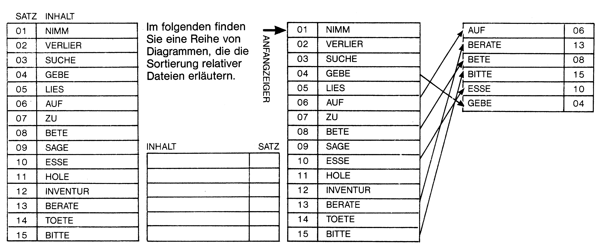
Bild 6b. Datenpuffer der Kapazität M%
Bild 6c. Die M%-niedrigsten Elemente der unsortierten Ausgangsdatei (Zeiger auf 1. Satz) werden in den Puffer gelesen und dabei gleichzeitig alphabetisch geordnet (im Puffer!). Die Daten, die in den Puffer gelesen werden (bzw. die Sätze), werden gleichzeitig in der Ausgangsdatei gelöscht.
Herr Helm hat zwei große Schwimmbecken – eines leer und eines voll mit Wasser. Er möchte das leere Schwimmbecken nun mit dem Wasser des vollen Schwimmbeckens füllen. Da er das volle Becken jedoch nicht einfach hochheben, zum anderen Becken hintragen und hineinleeren kann, braucht er ein Hilfsmittel. Zum Beispiel einen Eimer, der maximal so groß sein darf, daß Herr Helm ihn im gefüllten Zustand noch gut tragen kann. Nun kann er den Eimer im vollen Becken mit Wasser vollschöpfen, zum leeren Becken gehen und den Eimer dort hineinleeren. Herr Helm muß also mehrmals zwischen den Becken hin und her laufen, bis das volle Becken leer und das vorher leere Becken voll ist. Je kleiner der Eimer ist, umso öfter muß Herr Helm zwischen den Becken hin und her gehen...
Der Eimer ist als »Puffer« beziehungsweise »Datenpuffer« zu sehen. Den »Eimer«, den wir als Puffer zum Sortieren benutzen werden, sehen Sie in Bild 6b. Er faßt bis zu 6 Sätze. In Wirklichkeit ist der Speicher des C 64 natürlich groß genug, um mehrere hundert Sätze puffern zu können. Der Einfachheithalber wollen wir uns jedoch auf einen kleinen Puffer beschränken. Unser Puffer besteht aus zwei Teilen. Im einen (M$(1)-M$(%)) werden die Sätze gespeichert. M% ist die Größe des Puffers – also 6. In der anderen Hälfte des Puffers (M$(1)-M$(M%)) wird gespeichert, an welcher Stelle die Sätze in der relativen Datei stehen – also die Nummern der Sätze.
Als Ziel des gesamten Sortiervorgangs soll die Verben-Datei alphabetisch geordnet vorliegen. Wie beginnen wir nun den Sortiervorgang? Das einzige Feld, das wir sortieren können, ist der Puffer. Wir müssen also zuerst Sätze von der Verben-Datei in den Puffer lesen, um sie dort verarbeiten zu können. Unsinnig wäre es, einfach die ersten 6 Sätze der Datei in den Puffer zu lesen und zu sortieren – das bringt nichts.
Wir durchlaufen zunächst die ganze Verben-Datei einmal von Anfang bis Ende und suchen die niedrigsten 6 Sätze heraus. Diese Sätze schreiben wir in den Puffer (Schema Bild 6c).
Das Suchschema läuft so ab, daß die 6 Sätze am Ende bereits alphabetisch im Puffer abgelegt sind. Gleichzeitig werden alle Sätze, die in den Puffer geschrieben werden, auf der Ausgangsdatei gelöscht. Nachdem der Puffer voll ist, sieht die relative Datei auf Disk wie in Bild 6d aus:
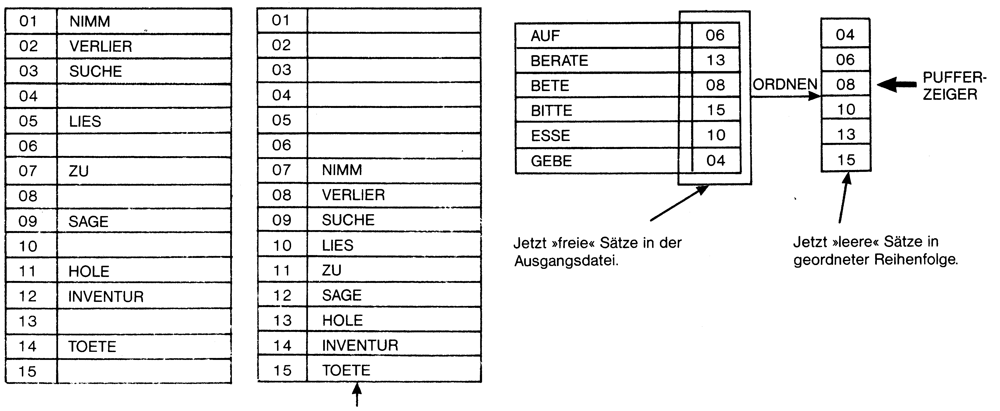
Bild 6e. Unser nächstes Ziel: Platz schaffen, um den Puffer wieder in die Ausgangsdatei zurückschreiben zu können.
Bild 6f. Hier sehen Sie, wie nach dem Aussortieren der ersten Sätze Platz zum Zurückschreiben geschaffen wird.
Betrachten wir nun einmal die ersten M%-Sätze der jetzigen Datei. An genau dieser Stelle müssen am Ende des Sortiervorgangs die 6 niedrigsten Sätze stehen. Diese Sätze befinden sich in unserem Puffer. Allerdings können wir den Puffer jetzt nicht gleich dorthin übertragen, da sich in ihm noch volle Sätze befinden, die beim Zurückschreiben des Puffers überschrieben werden würden – also verlorengingen.
Zählen wir doch einmal, wie viele volle Sätze noch im oberen Bereich stehen: genau 4 (Satz 1, 2, 3 und 5). Wir müssen also 4 Sätze »in Sicherheit« bringen, bevor der Pufferinhalt in den oberen Bereich geschrieben werden darf.
Aber wohin denn nun mit den 4 Sätzen? Sicherlich werden Sie schon festgestellt haben, daß sich im unbetroffenen Teil der Datei, der beim Übertragen des Puffers nicht überschrieben wird, genau 4 leere Stellen befinden. 4 Stellen, an denen vorher Sätze standen, die sich jetzt gerade im Puffer befinden und die später in den oberen Bereich geschrieben werden. Es bietet sich also an, die 4 Sätze im oberen Bereich in die 4 Leersätze des unteren Bereiches zu schreiben (s. Bild 6e).
Wenn Sie nicht ganz mitgekommen sind, lesen Sie bitte den Abschnitt noch mal durch. Es gibt nun verschiedene Methoden, den oberen Bereich zu räumen. Die einfachste ist, die gesamte Datei mit Schleifen zu durchlaufen. Dies erfordert jedoch wieder zahlreiche Lesezugriffe per Disk und wir haben uns vorgenommen, ein möglichst Disketten- und Laufwerk-schonendes zu entwickeln. Wir entscheiden uns deshalb für einen komplizierteren Weg, der jedoch nur sehr wenige Zugriffe mit dem Floppy-Laufwerk erfordert.
Wie ich bereits sagte, ist der Puffer in zwei Hälften unterteilt – eine für die Sätze selbst und eine für die Satznummern. Werfen Sie bitte einmal einen Blick auf Bild 6f. Hier wird gezeigt, wie die Pufferhälfte, in der die Satznummern stehen, mit der kleinsten Satzzahl beginnend sortiert wird. Hierfür verwenden wir unser Quicksort-Unterprogramm, das aus Geschwindigkeitsgründen jedoch auf Zahlen-Sortieren modifiziert wird.
Nachdem die Nummern-Pufferhälfte sortiert ist, wird ein Pufferzeiger gesetzt – der genau auf den ersten leeren Satz zeigt, der sich nicht mehr innerhalb des oberen Bereiches befindet (in unserem Beispiel SATZ 8). Dies ist nötig, damit versehentlich nicht Daten, die aus dem oberen Bereich »gerettet« werden sollen, in einen leeren Satz innerhalb des oberen Bereiches geschrieben werden.
Bild 6g zeigt schließlich, wie die 4 Sätze aus dem oberen Bereich auf die 4 leeren Stellen des unteren Bereiches verteilt werden. Nun kann der Pufferinhalt wieder in die Verben-Datei zurückgeschrieben werden (Bild 6h). Die ersten M%-Sätze der Datei sind damit alphabetisch geordnet.
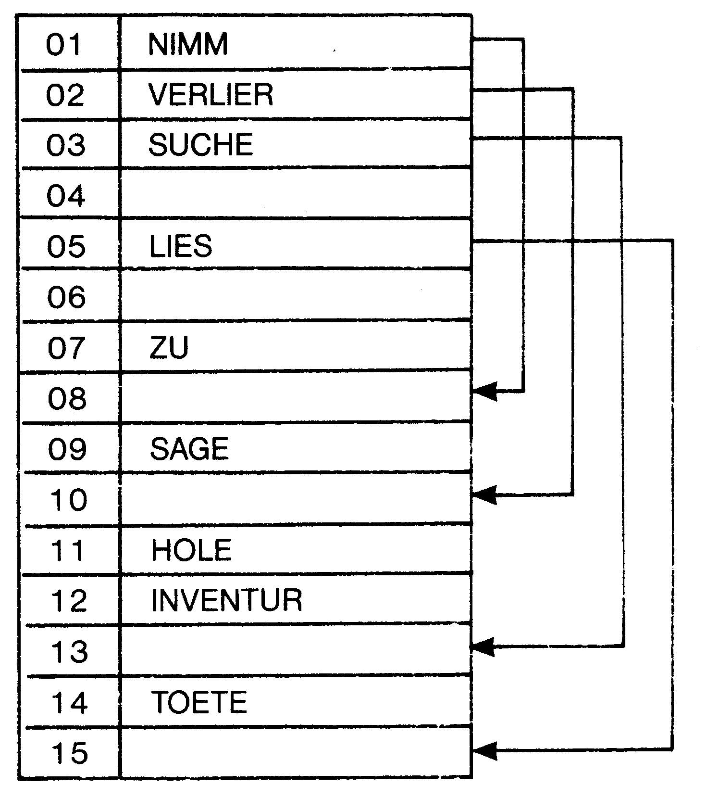
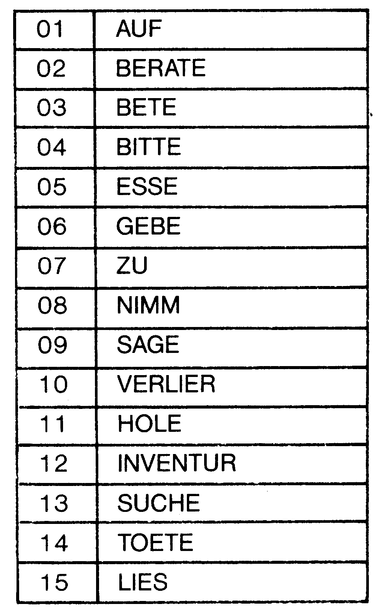
Nun wird der Zeiger der Verben-Datei, der bisher an erster Stelle stand (weil wir die ganze Datei und nicht nur einen bestimmten Bereich sortieren wollen) um den Wert M% erhöht. Er zeigt sodann auf die Stelle, an der der noch unsortierte Bereich der Datei beginnt (Bild 6i). Der nächste Sortierabschnitt kann nun beginnen.
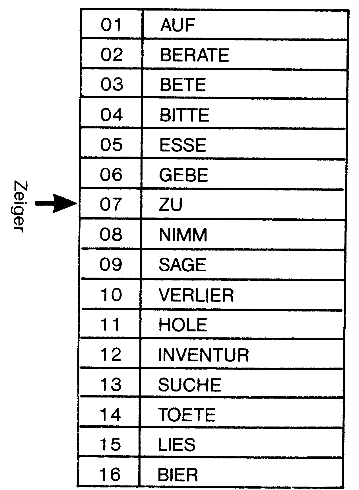
Sind alle Sortierabschnitte beendet – also jeweils Puffer mit den M% niedrigsten Elementen vom unsortierten Bereich füllen, Sätze aus dem Pufferbereich in Sicherheit bringen, Puffer zurückschreiben etc. – liegt die komplette Verben-Datei sortiert vor (Bild 6j).
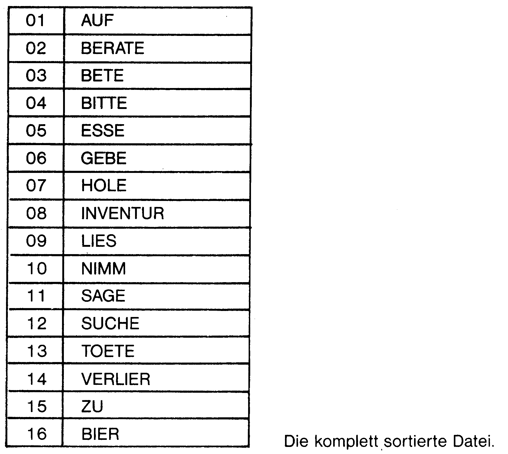
Eine Frage ist noch offen ...
Woher das BIER in SATZ 16 kommt? Nun, das haben Sie sich nach diesem Brocken Theorie mit Sicherheit verdient (und ich auch!)...
Anschließend finden Sie das Listing 24 zum Sortierprogramm. Bitte studieren Sie auch die Dokumentation ausführlich, damit Sie später in der Lage sind, das Programm eigenen Vorstellungen entsprechend zu ergänzen beziehungsweise abzuändern.
Dokumentation zum Super-Sort-Listing
| 100 - 130 | Hier werden die Felder für die beiden Pufferteile und den Quicksort definiert. Durch Ändern der Variable M% kann die Größe des Puffers geändert werden (momentaner Wert 300). |
| 200 - 295 | Anfangsmenü und Eingabe aller Parameter. AN - EN, Bereich innerhalb der Datei NS, der sortiert werden soll. ZL, ZR begrenzen den Bereich innerhalb der Sätze, nach dem sortiert werden soll. Beispiel: MID$(A$,ZL,ZR) |
| 300 - 330 | Vorbereitung für den ersten Sortiervorgang (Sortieren der M% niedrigsten Sätze, beginnend ab dem Zeiger auf die Ausgangsdatei). ZD, Zeiger in Datei. Um die M% niedrigsten Sätze zu finden, wird die gesamte Datei von Satz ZD bis zum letzten Satz durchlaufen. VG$ wird als Vergleichsargument bestimmt. |
| 400 - 470 | Hier wird mittels einer Schleife die Datei ab ZD bis Ende nach den M% niedrigsten Sätzen durchsucht. Dabei wird jeweils der Vergleichsstring VG$ mit einem Satz des Suchbereiches verglichen. Wird ein Satz gefunden, der kleiner als VG$ ist, so nimmt VG$ dessen »Wert« an. In der Variablen MM wird gespeichert, an welcher Stelle der Datei der momentane »Wert2«, der in VG$ gespeichert ist, steht. Ist die Datei einmal durchlaufen, so steht in VG$ der kleinste Satz des durchsuchten Bereiches. |
| 500 - 570 | Der Satz MM, also die zugehörige Satznummer zum im Durchlauf gefundenen, niedrigsten Wert VG$, wird in der Datei gelöscht. Löschen ist eigentlich eine falsche Bezeichnung. In den Satz MM wird vielmehr ein »%« geschrieben. Dies ist notwendig, da ein leerer Satz, also A$="" schließlich auch ein Satz ist. Leere Sätze sind kleiner als alles andere. Hat eine Datei, die sortiert wird, leere Sätze, so stehen diese nach dem Sortiervorgang immer an den ersten Stellen in der geordneten Datei. In der Datei, die sortiert werden soll, darf somit nie in einem Satz ein einzelnes »%« stehen, da es dann zu Schwierigkeiten beim Lückenfüllen kommen kann. Wer auf »%« in seiner Datei nicht verzichten kann, kann im Listing das »%« auch durch ein anderes Zeichen ersetzen, das dann nicht verwendet werden kann (in der Datei). Nun wird geprüft, ob der Puffer schon voll ist (Zeile 540). ZP ist der Pufferzeiger. Sein Wert wird immer dann um 1 erhöht, wenn ein Satz in den Puffer geschrieben worden ist. Ist noch Platz im Puffer, geht es so weiter: Ein neues Vergleichselement VG$ muß bestimmt werden. Dabei muß aufgepaßt werden, daß das neue VG$ niemals " " sein darf. Hierfür sorgt Zeile 560. Nun folgt ein Rücksprung zu 400 – es wird wieder das kleinste Element gesucht. |
| 600 - 670 | Der Puffer ist jetzt voll. Die Pufferhälfte MS(1)-MS(M%), in der die Satznummern gespeichert sind, wird nun mittels dem Quicksort-Unterprogramm sortiert (vergleiche Bild 6). Anschließend wird der Pufferzeiger ZP auf den ersten Satz gesetzt (Leersatz beziehungsweise Satz mit »%«), der im unteren Bereich liegt (Zeile 650 - 670). |
| 700 - 760 | Hier werden die vollen Sätze, die noch immer im oberen Bereich stehen, evakuiert – also in die leeren Sätze des unteren Bereiches geschrieben. Hierzu wird der obere Bereich mit einer Schleife durchlaufen. Wird ein voller Satz gefunden, so wird er in den Leersatz geschrieben, auf den der Pufferzeiger gerade deutet. Der Pufferzeiger wird sodann um den Wert 1 erhöht. |
| 800 - 860 | Der Puffer wird mittels Schleife in den oberen Bereich ab ZD (Zeiger auf Datei) geschrieben. |
| 900 - 950 | Nun wird der nächste Sortierabschnitt vorbereitet. Der Dateizeiger ZD wird um den Wert M% erhöht – also auf den Satz gestellt, bei dem der noch unsortierte Bereich der Datei beginnt. Ein neues Vergleichs-Element wird bestimmt. Der Pufferzeiger wird wieder auf den Wert 1 zurückgesetzt. Sodann wird überprüft, ob der Puffer größer ist als der Bereich, der noch sortiert werden muß. Ist dies der Fall, so wird der Puffer so verkleinert (M% in Zeile 930), daß der Bereich, der noch sortiert werden muß, genau in ihn hineinpaßt. In Zeile 910 wird solch eine Puffergrößenveränderung festgestellt – die Sortierung ist beendet. Die Variable erfüllt den gleichen Zweck dann, wenn alles glatt aufgeht, und M% nicht erniedrigt wird. |
| 9000 - 9230 | Unterprogramme zum Positionieren, Lesen und Schreiben eines Satzes auf eine relative Datei. |
| 10000 - 10080 | Kleine Lese-Routine zum Orientieren vor dem Sortieren. |
| 30000 - 30120 | Quicksort-Unterprogramm |
Ich möchte an dieser Stelle nochmals darauf hinweisen, daß das hier vorgestellte Sortierprogramm keineswegs das bestmögliche ist. Verbesserungen sind insbesondere in punkto Sätze aus dem oberen Bereich in die Leersätze übertragen, möglich. Bevor Sie anhand eigener Ideen Verbesserungen vornehmen, sollten Sie jedoch stets bedenken, ob diese Verbesserungen Disketten und Floppy-Laufwerk schonend genug behandeln – also möglichst wenige Schreib-Lese-Operationen ausführen.
Arbeiten mit dem Super-Sort-Programm
Nach dem Programmstart müssen Sie den Namen der Datei angeben, die Sie sortieren möchten (Disk einlegen!).
Danach haben Sie die Auswahlmöglichkeit unter den drei Menüpunkten »Ganze Datei sortieren«, »Teilbereich sortieren« und »Lesen«. »Lesen« funktioniert wie beim relativen Dateien-Editor, und dient hier lediglich zur Orientierung für Sie. Wählen Sie »Ganze Datei sortieren«, so wird die gesamte Datei sortiert. Das Satzende wird automatisch durch Abfragen des Floppykanals nach Fehler 50 ermittelt.
»Teilbereich ermitteln« erlaubt es, einen bestimmten Bereich der Datei zu ordnen. Vor dem Sortieren müssen Sie noch angeben, nach welchem Stringbereich die Sortierung erfolgen soll – also welcher Stringbereich verglichen wird. Diese Funktion ist besonders wichtig beim Sortieren von Dateien mit mehr als einem Schlüssel.
Alle Zeilen im Programm, die mit REM SUPERMIKE gekennzeichnet sind, können weggelassen werden (zur Geschwindigkeitserhöhung). Sie ermöglichen es, den ganzen Sortiervorgang auf dem Monitor mitzuverfolgen.
Bedenken Sie, daß das Sortieren von Dateien mit mehreren 1000 Sätzen sehr viel Zeit in Anspruch nimmt. Es lohnt sich dann kaum, beim Computer zu warten.
Geheimtip: Sortiervorgang vor dem Schlafengehen starten – am nächsten Morgen ist alles vorbei!
Wer Angst vor einer zu hohen Stromrechnung hat, kann ein Schalter-Interface an den User-Port anschließen und das Programm so modifizieren, daß sich der Computer samt Peripherie am Ende des Sortiervorganges selbst abschaltet!
Eine bessere Lösung
Unser Super-Port funktioniert einwandfrei. Wer nur ab und zu sortieren will, ist mit ihm gut bedient. Die folgende Sortiermöglichkeit ist eine wesentliche Verbesserung gegenüber unserer ersten. Wer die Handhabung von Puffern und Zeigern verstanden hat, wird auch mit der folgenden Theorie keine Probleme haben.
Unser Super-Sort 1 benötigt noch ziemlich viele Disk-Zugriffe, um den Puffer zu füllen. Es gibt jedoch eine wesentlich schnellere und schonendere Lösung:
Theorie zum Super-Sort 2
Auch hier wird wieder ein Puffer der Größe M% verwendet. Zu Beginn des Sortiervorgangs wird der Puffer einfach mit den ersten M%-Sätzen der Datei gefüllt. Wir suchen also nicht wie bei Super-Sort 1 die M% niedrigsten Sätze heraus.
Nun wird der gesamte Pufferinhalt mit dem Quicksort sortiert. Der nächste Schritt besteht darin, die gesamte Datei vom Zeiger beginnend bis zum Ende zu durchlaufen. Der Zeiger steht beim ersten Sortierabschnitt bei Satz M%, beim zweiten Durchlauf auf 2mal M% etc. Bei jedem eingelesenen Satz wird geprüft, ob dieser kleiner ist als der größte Satz im Puffer (steht beim sortierten Puffer an letzter Stelle). Ist dies nicht der Fall, wird der nächste Satz gelesen. Tritt aber nun der Fall ein, daß der Satz kleiner als der größte Satz des Puffers ist, passiert folgendes:
Wir nennen den eingelesenen Satz nun einmal A$. A$ muß nun irgendwie in den Puffer geschrieben werden. Anhand der binären Suchmethode (an anderer Stelle des Kurses beschrieben) ermitteln wir, wo im Puffer A$ eingefügt werden muß. Der letzte Satz im Puffer wird dadurch aus dem Puffer hinausgeworfen (wir müssen schließlich Platz für A$ schaffen). Damit er jedoch nicht verlorengeht, wird er wieder in die Datei zurückgeschrieben – und zwar an die Stelle, an der A$, das sich nun im Puffer befindet, gestanden hat.
Diese Methode hat den Vorteil, daß pro Pufferfüllung die Datei nur ein einziges Mal durchlaufen werden muß. Auch das Problem, Platz für den Puffer-Zurückschreibevorgang zu schaffen, entfällt. Bei Methode 2 wird zwar wesentlich mehr innerhalb des Rechners sortiert, es wird jedoch soviel Zeit bei Diskoperationen gespart, daß Methode 2 wesentlich schneller und Disk-schonender ist.
Wie gesagt, für diesen Kurs reicht Super-Sort I vollkommen aus. Wer viel sortieren will, sollte sich jedoch ein Sortierprogramm der oben beschriebenen Methode schreiben.
Trick am Rande: Diskettenseite abfragen
An dieser Stelle möchte ich einmal ein Problem abhandeln, das immer dann auftaucht, wenn man Programme schreiben will, die sich über zwei oder mehrere Disk-Seiten erstrecken. Bei Adventure-Spielen und KI-Programmen, die sich selbst verwalten, ist dies besonders häufig der Fall. Im Programm kommt dann früher oder später die Anweisung BITTE DISK-SEITE X EINLEGEN. Wie kann man nun innerhalb eines Programmes feststellen, ob auch die richtige Disk-Seite eingelegt worden ist? Dem Anfänger bereitet dies oft Schwierigkeiten, da Probleme wie diese nicht im Bedienungshandbuch des Floppy-Laufwerks behandelt werden. Die Lösung liegt einfach darin, den ID der eingelegten Disk einzulesen. Dies setzt natürlich voraus, daß der ID der ersten Diskette 01, der der zweiten 02 etc. beträgt. Im folgenden finden Sie deshalb zunächst ein kleines Hilfsprogramm, mit dem es möglich ist, Diskname und ID einer Disk nachträglich zu verändern ohne, daß die Disk formatiert werden muß beziehungsweise ein sich auf ihr befindliches Programm verloren geht (Listing 25).
Beachten Sie bitte, daß der Diskname nicht mehr als 17 und der Disk ID nicht mehr als 5 Zeichen Länge haben darf. Nun brauchen wir nur noch ein kleines Basic-Unterprogramm, mit dem der Disk-ID gelesen werden kann (Listing 26).
Bevor das Programm mittels GOSUB 51200 aufgerufen werden kann, muß der Floppykanal 15 geöffnet sein. Anschließend muß noch durch die Variable SIDE (beziehungsweise SI) bestimmt werden, welche Seite eingelegt werden soll. Das Unterprogramm führt erst dann ein RETURN aus, wenn die gewünschte Seite eingelegt ist. Innerhalb eines Basic-Programmes sieht dies dann so aus:
10 OPEN15,8,15
20 SIDE=2
30 GOSUB51200
40 ENDEs bietet sich an, den ID der ersten Seite als 1SIDE, den der zweiten Seite als 2SIDE etc. zu benennen, da eine einzige Ziffer beim ID nicht ausreicht!
Vergessen Sie auch nicht aus Sicherheitsgründen, nach einem Disk-Wechsel immer neu zu initialisieren.
Sie können dieses Unterprogramm leicht in eigenen Basic-Programme einbauen. Das Disk- und ID-Änder-Programm speichern Sie am besten wieder auf Ihrer Utility-Disk, auf der sich auch die Editoren befinden.
(M. Nickles/bs)